One system that takes the order, collects the money, runs the job through production and quality control, buys the stock, pays the staff, files the taxes and keeps the books — for shops that print and brand with DTF, UV, embroidery, large format and laser.
For shop staff, supervisors, finance and the owner Prices are in Kenya shillings (KES), VAT at 16%
The guide follows the money: an order is taken, paid for, made, checked, handed over, and then it shows up in the stock, the tax and the accounts. Each section says where to click and what happens next.
Where to click is written as Module → Tab, for example Finance → Expenses. The modules are in the menu down the left side of the screen. You only see the modules your role allows.
Roles
The system ships with five roles. The Admin can add more, or change what each role can open, under Master Data → Roles & Access. A change takes effect straight away.
Role
Typically does
Staff (sales person)
Takes General, Film, Artwork and Embroidery orders; works the production jobs assigned to them; sees their own orders and their own commission.
Front Office
The receptionist or cashier: captures orders for the sales persons, takes payments, sees every order, and logs petty cash expenses (its Petty Cash entry). Sees no costs and no commission, and nothing else in Finance.
Supervisor
Assigns jobs, inspects quality, raises purchase requisitions, approves discounts above the ceiling, watches payments and every order.
Everything financial and operational, except the Master Data set-up screens.
Admin
Everything, including setting the commission rates and Master Data (staff, roles, price lists, settings, integrations, backups). The Admin role always has full access, so a mistake in role settings can always be fixed.
Controls built in
Money records are protected by maker and checker: an expense can only be amended or deleted by raising a request with a reason, and a different manager approves it. Nobody approves their own request. See section 17.
2Signing in and finding your way
Pick your name on the sign-in screen and tap your 4-digit PIN on the pad. The system name and company logo appear at the top of the screen and the sidebar.
Your name does not show on the screen? The screen says why (for example the list could not be loaded) and offers try again. Some browsers' ad or tracker blockers, VPNs and data-saving modes stop the list from loading: switch the blocker off for this site, or press Sign in with my email instead and enter the email address your login was sent to, with the same PIN. The emailed login says so too.
If an Admin has set a temporary PIN for you, you are asked to choose your own the first time you sign in.
Admins with an email address on file may be asked for a 6-digit code sent to their email after the PIN (Admin sign-in code, Master Data → Security).
Five wrong PINs lock the account — for 15 minutes the first time, then 30, 60 and so on, up to a day. An Admin can reset a PIN at any time.
Forgot your PIN? Press Forgot your PIN? on the sign-in screen, enter the email address on your staff record (the one your login was sent to) and a 6-digit code is emailed to you. Enter the code (valid 15 minutes) with a new PIN — 4 to 6 digits, not an obvious one like 1234; an Admin's is 6 — and sign in with it. Any session open with the old PIN ends. If there is no email on your record, or the email does not arrive, ask an Admin to reset it (Master Data → Staff & Users). It needs the mail account to be set up under Master Data → Email.
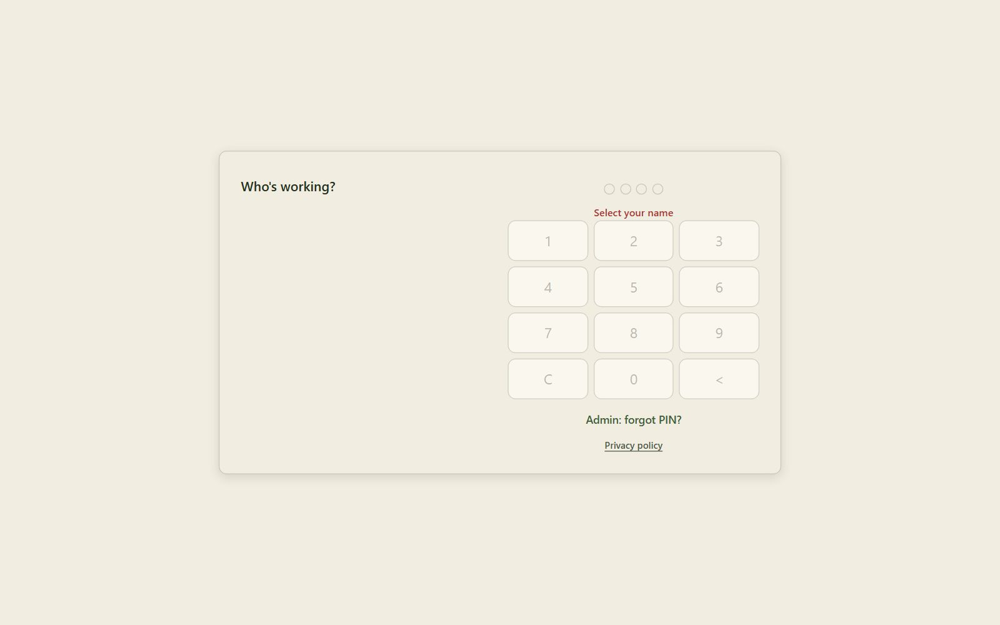
The sign-in screen: pick your name, then tap your PIN. The logo and system name come from Master Data → Company Info.
The sidebar
Your name and role are at the top. Click them to Change PIN or Log out. The modules sit below in four groups:
Group
Modules
Sales
General Order, DTF Film Order, DTF Artwork Order, UV DTF Film Order, UV DTF Artwork Order, Embroidery Order, Job Costing, All Orders (or Orders), Commission
At the bottom of the sidebar, Colours switches the look between Organic (the default), Industrial and Nocturne (a dark scheme). Collapse shrinks the sidebar to icons. On a phone or tablet the sidebar becomes a slide-in drawer behind the menu button.
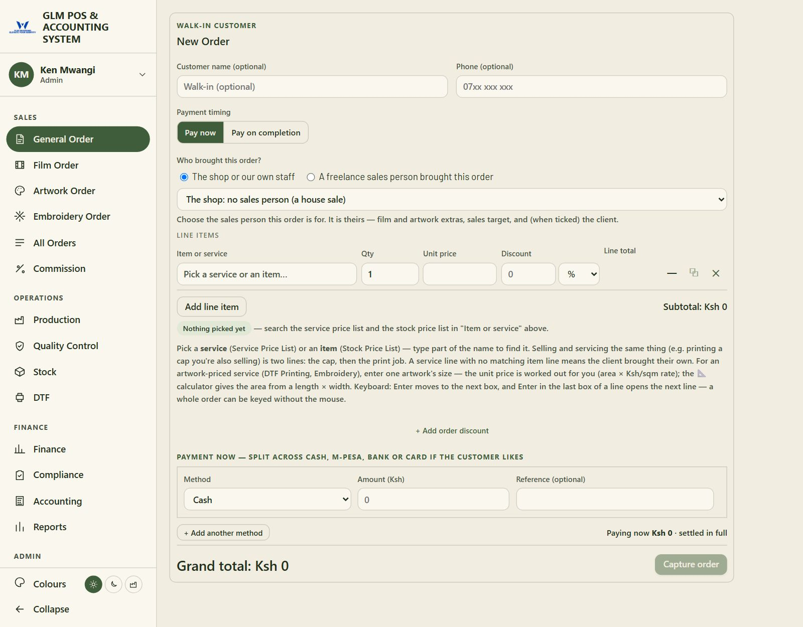
The sidebar on the left holds your name and every module you may open; the order form fills the rest of the screen.
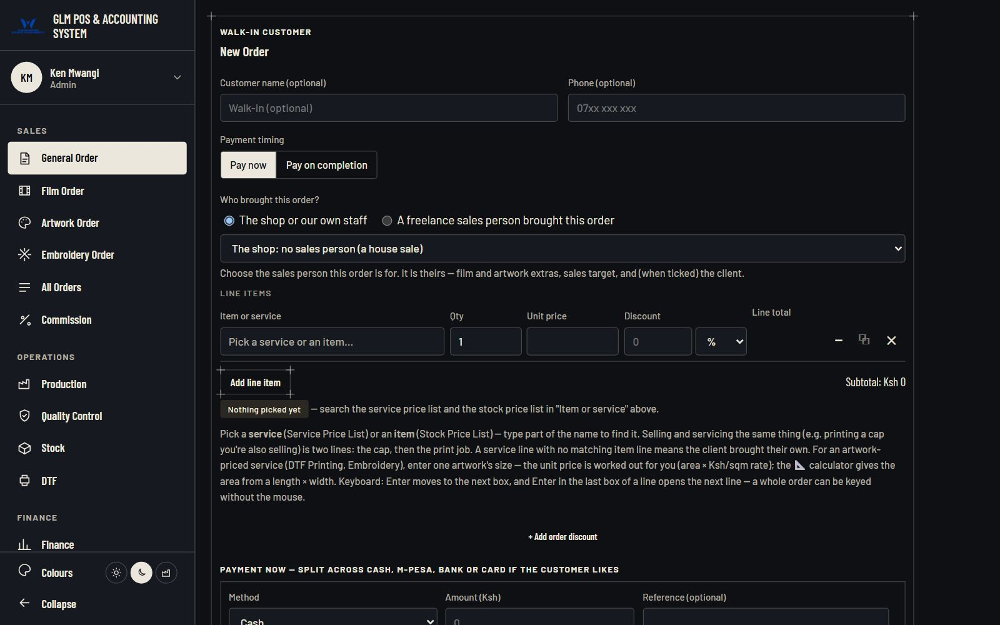
The Colours buttons at the bottom of the sidebar switch the look. This is the Nocturne (dark) scheme.
Most lists have a search box, a date range with presets (This month, This quarter, Year to date) and 10 rows to a page. Dates are shown as dd/mm/yyyy.
Approvals: one inbox for every decision
Open Approvals in the menu (everyone has it). It gathers everything that waits for somebody's decision into one page, in sections. Each section is a place in the system a request was raised, in the order of the menu, and only the places that have something show:
Head (where it was raised)
What waits there
Who decides
General Order, DTF Film Order
Nothing needs approval on these screens today; they appear here if it ever does.
—
DTF Artwork Order
A DTF artwork job priced below the recommended price.
DTF managers, Admin
UV DTF Film Order
A unit price discount asked for on UV Pen Costing or UV Flatbed.
Finance, the General Manager, Admin
UV DTF Artwork Order
A UV DTF artwork job priced below the recommended price.
DTF managers, Admin
Embroidery Order
An embroidery job priced below the recommended price.
DTF managers, Admin
Job Costing
A price agreed with a client that is under the lowest allowed without approval.
Finance, the General Manager, Admin
Finance
A change to a recorded expense; an expense, payroll entry or petty cash top-up someone asks to delete.
Another Finance manager, Admin
Stock
A stock requisition.
Those who approve stock, Admin
People (HR)
Leave asked for.
Those who manage HR, Admin
Inside a section, a small tag on each request says what kind it is (for example Unit price discount · UV Flatbed).
Waiting for me is what you may decide. Press Approve, or Turn down (a reason is needed for a price or a discount; it is optional for the rest). The buttons at the top of the page jump to each head. On My requests, an approved request has a highlighted button that says what to do next — Continue — capture the order for a Job Costing price or a unit price discount (it opens the quote, or the price picker with the approved discount already applied, ready to capture), Open the order — it can now go ahead for a price below the recommended one, and Open the order once an order has been captured from a quote; a turned-down price says Agree another price. Open goes to the very thing: a Job Costing price opens that saved quote; a price below the recommended one opens that order; a unit price discount opens UV Pen Costing or UV Flatbed with the pens or the size and pieces already filled in, and the approved discount already applied when the request is yours and approved (it is then ready to capture as an order). Leave sits under People (HR) and is decided on the People (HR) page, where it can ask you to confirm; the inbox lists it there so it is not missed.
My requests is how your own requests went: waiting, approved (and by whom) or turned down (with the reason), for two weeks. You never decide your own request: it is not in your Waiting list.
Each kind keeps its own rules: the inbox only gathers them and uses the same decision as the screen the request came from.
Notifications. The menu shows a red number on Approvals: the requests waiting for you, plus any decisions on your own requests you have not looked at (opening My requests clears those). The same number is in the browser tab's title, the page checks every minute and when you return to the window, and a short notice (A new request is waiting for your decision) appears with an Open Approvals button. When email is set up (Master Data), the people who can decide are also emailed when a request is raised, if they have an email address (Master Data → Staff & Users); an Admin can switch this off with the box at the bottom of the Approvals page.
3Setting the business up (Admin, once)
Do these in order on day one. Each is under Master Data unless stated. The system works with sensible starting values, but your prices, people and payment details must be yours.
#
Where
What to set
1
Company Info
Company (trading) name, registered name, address, logo, phone numbers, website and social links, KRA PIN and VAT details. Everything you enter here prints on invoices, quotations and receipts. Also the system name shown on screens, and the on/off switch for the Commission module.
2
Staff & Users
Add each person with first and last name (middle name optional), role, email (for PIN emails) and PIN. Edit, Reset PIN and Delete are at the end of each row. Switching someone off ends their sessions at once but keeps their history.
3
Roles & Access
Tick which areas each role can open. After creating a custom role, tick View all orders if it should see everyone's orders.
4
Business Heads
The lines of business you report on: DTF Printing, UV DTF Printing, UV Printing, Laser Engraving, Large Format Printing, Embroidery, Printing & Publications, General Order are created for you. Add, rename or retire heads.
5
Service Price List
Every service you sell with its unit (piece, sqm, metre…), price (VAT included), description, size and business head. Tick Charges pressing fee or Artwork pricing (priced by area) as needed. Download Excel / Upload Excel lets you edit hundreds of lines at once; the upload shows what will be added, changed or refused and applies nothing until you press Apply. Market survey sheet (Admin) downloads a different Excel file for researching competitors: every service and stock item on the lists, and the jobs the system prices by formula (DTF and UV DTF, UV pens, embroidery, business cards, signage, eulogies, company profiles, brochures), each with the exact specification to ask for and empty columns for five competitors' prices — none of our own prices are on it, so it can be handed to whoever does the survey.
6
Stock Price List
Items you stock and sell (caps, polos, mugs, blanks, consumables) with size, price, on-hand quantity, reorder level and usual business head.
7
Discount Rules
The discount ceiling. A discount above it needs supervisor approval.
8
Embroidery Pricing
The stitch-count price, the quantity price table, set-up and design-origination charges. See section 5.5.
9
DTF → Setup
Film price band (minimum and standard price per metre), charge per running metre for artwork, wastage tolerance. Then install your first roll under DTF → Rolls.
10
M-Pesa / NCBA
Your Paybill or Till and the Safaricom Daraja keys, then Save → Test the connection → Switch on. Start in Sandbox, move to Production with live keys. NCBA Bank customers can use NCBA's STK push and payment notifications instead.
11
Email / WhatsApp
Connect the mail account and the WhatsApp Business number used to send invoices and receipts as PDFs.
12
Backup / Security
Set an automatic backup schedule (and optionally Google Drive). Turn on the Admin sign-in code.
13
Finance → Petty Cash
Record the opening petty-cash float (top-up).
14
Accounting → Journals
Enter the opening balances once: bank, cash on hand, M-Pesa float, owner's capital. The chart of accounts builds itself.
15
Compliance → Employees
For each employee: National ID, KRA PIN, SHIF number and gross monthly salary. These print on payslips and the P9.
Before you go live
The system is seeded with demonstration users. Add your own Admin, then delete the demonstration accounts. Check every price and rate you entered — figures such as the minimum wage, withholding-tax rate and wastage tolerance are starting values to confirm with your accountant.
4The life of an order
Every order, whatever the product, takes the same road. Knowing the road makes every screen predictable.
1 CaptureOrder or quotation taken. Prices checked against the price list.
2 PayCash, M-Pesa, bank or card — now, or on completion. Receipt printed.
3 Order ReceivedWaiting in Production to be assigned.
4 In ProductionAssigned in-house, or sent to a supplier.
5 Quality CheckInspected: pass, or back to production.
6 ReadyPassed. Waiting for the customer.
7 CompletedHanded over. The only way to complete.
In parallel, the money side is keeping up on its own:
VAT on the sale is recorded the moment the sale is made (output VAT), and VAT on your purchases and expenses is recorded as input VAT.
The sale, the payment, the stock used and any supplier bill are posted to the books automatically; there is no second entry.
Commission is earned as the customer's money arrives.
Unpaid balances appear under Pending Payments and in Accounting → Receivables.
Two kinds of orderWalk-in orders are sales the moment they are captured: customer optional, paid at the counter, thermal receipt printed. Corporate orders start as a Quotation for a registered corporate client, become an Invoice on acceptance, and are collected on credit terms.
5Taking an order
5.1 General Order (walk-in) Staff · Front Office
Used for everything that is not film, artwork or embroidery: UV prints, large-format banners, laser engraving, mugs, caps, shirts and plain product sales. Open General Order.
Customer. Name and phone are optional for an ordinary walk-in. They become required when the client is to be credited to a sales person (see Who brought this order? below), because the client must be identifiable to be credited.
Add lines. Search one list that holds both your services and your stock. Each line has a quantity and a price taken from the price list (prices include VAT).
Materials and services are separate lines. Selling a printed cap is two lines: the cap (a material) and the printing (a service). A service line with no material line means the customer brought their own item.
Heat press fee. A service flagged Charges pressing fee (such as DTF Printing) asks you to pick the pressing fee per piece from a fixed list. A tag warns you if it is left blank.
Priced by area. A service flagged Artwork pricing asks for the artwork size in square metres and the number of pieces; the price per piece is worked out for you. The 📐 calculator converts length × width in centimetres to square metres.
Discounts. Put a discount on a line, or use + Add order discount (percentage or amount). If it goes above the ceiling set in Discount Rules, a tag reads Exceeds standard discount — needs supervisor approval.
Payment timing.Pay now (the default): the customer pays at the counter, and you record how. Pay on completion: the customer pays when they collect.
Who brought this order? Choose The shop or our own staff — a house sale, or pick the sales person the order is for — or A freelance sales person brought this order. Only when the Commission module is switched on.
Payment now. Split the amount across cash, M-Pesa, bank transfer and card; Rest fills in what is left. For M-Pesa, enter the phone number and press the STK push button: the customer gets a prompt on their phone (see section 6).
Press Capture order. The thermal receipt (80 mm, two copies, heavy black type) opens for printing, and the order is created at the stage Order Received.
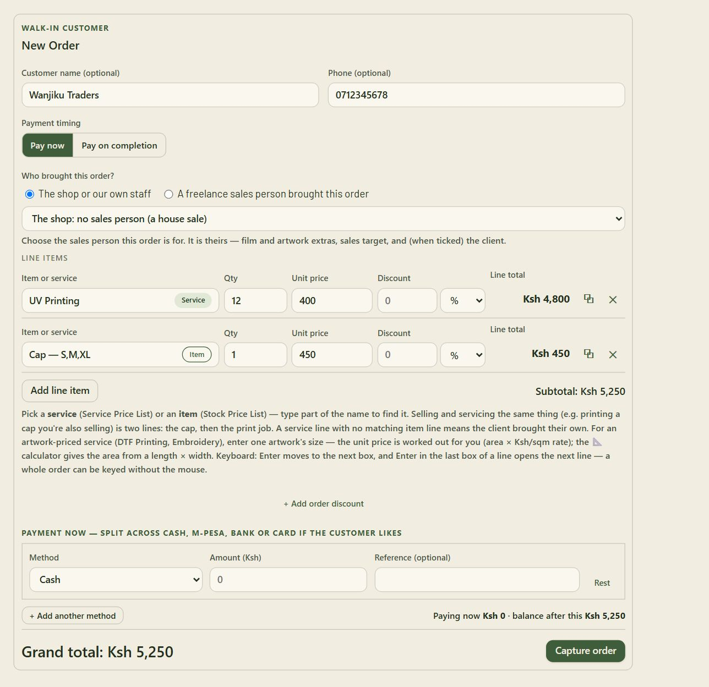
A General Order: customer, payment timing, who brought the order, the lines picked from the price list, and the payment panel at the bottom. The total updates as lines change.
Who brought this order? — commission
If the Commission module is switched on, every order asks Who brought this order?
The shop or our own staff. Leave it as The shop: no sales person (a house sale) for walk-ins and clients the shop already had — no name or phone is needed, and a house order earns no sourcing commission. If a staff member brought the client in through their own network, tick "[Name] brought this client in — credit them for 12 months". The client then stays credited to that person for the ownership period, and every order from them counts towards that person's sales, whoever captures it. A client can only be credited to one person; if someone else already owns them, the system says who.
A freelance sales person brought this order. Pick the freelancer. They are credited on that order alone and paid weekly (section 14). An order is credited to a staff member or a freelancer, never both.
Front Office staff capturing for a sales person choose the sales person in the same place.
5.2 Corporate quotation and invoice Finance · Staff
For companies buying on account. Corporate clients are kept under Finance → Corporate Clients with their credit days, email, phone and an optional contact person, who is printed as Attn: on their documents.
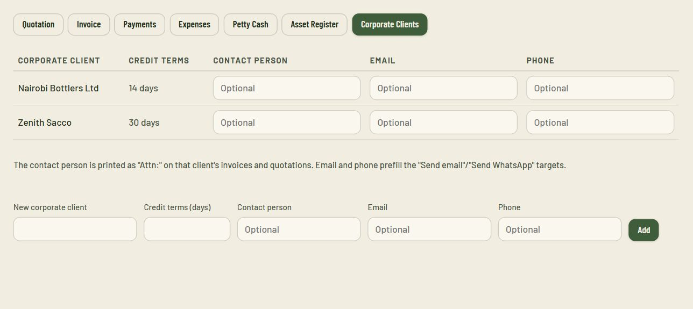
Finance → Corporate Clients: each client with its credit terms, contact person, email and phone.
Finance → Quotation: choose the client, add the lines as for a General Order, apply any discount and save. The order is a Quotation (it is not yet a sale, so it does not count as revenue or VAT).
Print it on A4, or press Email or WhatsApp to send it to the client as a PDF. The email or phone is prefilled from the client record.
When the client accepts, open the order and press Convert quotation to invoice. It now counts as a sale, and its due date is set from the client's credit days.
Invoices are collected under Finance → Invoice and Finance → Payments; what is owed appears in Accounting → Receivables.
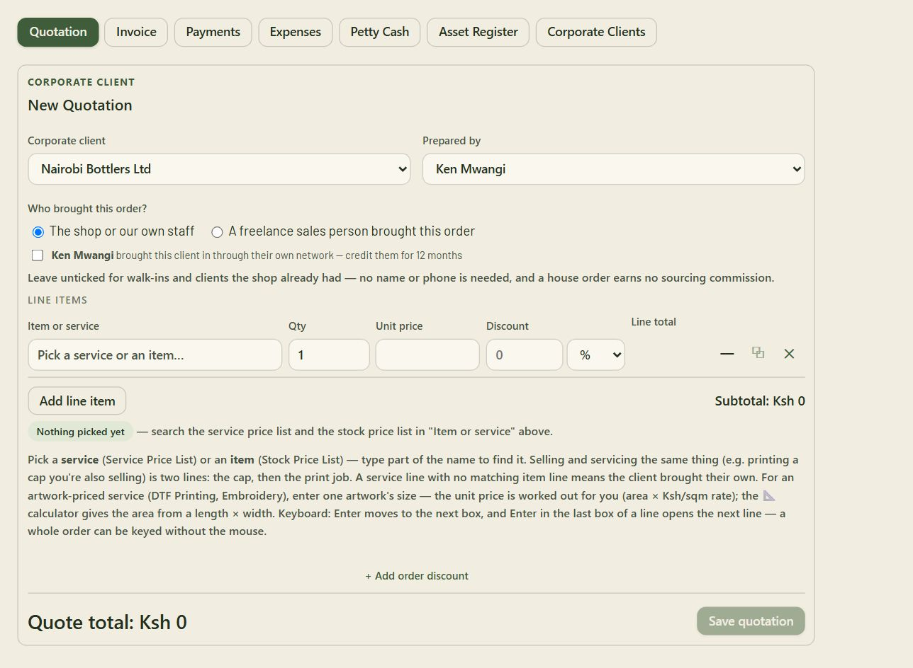
Finance → Quotation: choose the corporate client and who prepared it, then add lines as for any order.
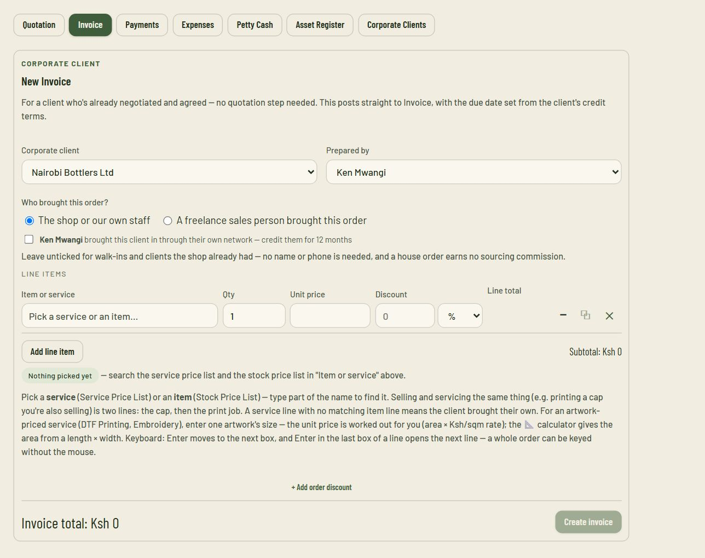
Finance → Invoice lists the invoices; balances and due dates show what is still to collect.
The invoice shows Subtotal (incl. VAT), VAT @ 16%, Total Due and Balance Due.
5.3 DTF Film Order (film by the metre) Staff
Open DTF Film Order. You are selling printed film from the current open roll.
Choose the Roll, add the client (optional), then enter the metres and the price per metre. The price must be inside the band set in DTF → Setup: not below the minimum, and it can go above the standard price.
Press Continue to take the payment (in full or part, any mix of methods) as in a General Order; the amount paid cannot exceed the total.
The sale is booked against the roll, which reduces its remaining length.
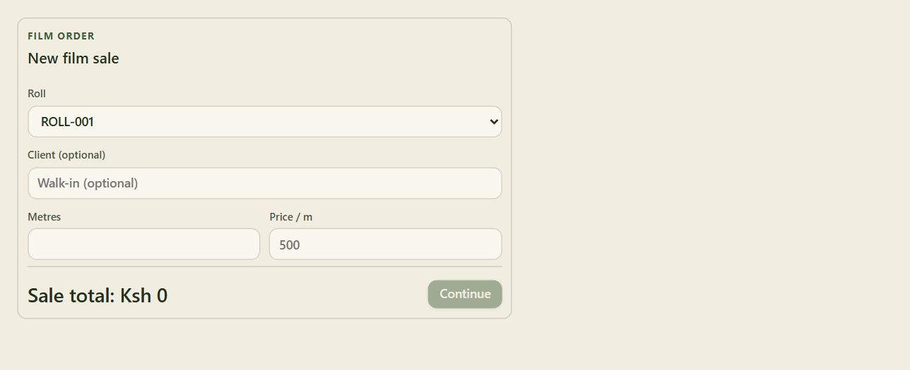
DTF Film Order: the roll, the length sold and the price per metre. The sale total updates as you type.
Why it mattersThe premium you charge above the minimum price per metre is what earns film commission, so pricing well is rewarded. Prices below the minimum are refused by the system, not just by the form.
5.4 DTF Artwork Order (priced per piece) Staff
Open DTF Artwork Order. A customer's design printed on transfers and sold per piece.
Enter the client, the number of pieces and the running metres used. The system works out a recommended price per piece from the running metres: the charge per running metre (DTF → Setup) × the running metres is the cost of that length of film, and it is shared equally between the artworks on it. The film is paid for whether or not the artworks fill its width, so the client bears the empty space. For example, at 600 a metre, 0.53 m of film carrying 2 artworks costs 600 × 0.53 = 318, so each artwork is 159; with 6 artworks on the same film each is 53. Nothing else is added per piece.One exception — a very small share: when each artwork's share of the film comes to less than 30, the recommended price is 40 instead (for example 30 artworks on 0.53 m at 600 a metre would be 10.60 each, so it is recommended at 40 each, 1,200 in all). Both figures are set in DTF → Setup (Small share: an artwork's share of the film below and Small share: the recommended price is then; 0 switches the rule off). The lowest price per artwork is a separate figure: the least anyone may charge for one, even with approval.
Choose the heat press fee — this is compulsory; there is no "none".
You may charge more than the recommendation (the extra earns commission). You may charge less (not under the minimum per piece in DTF → Setup, if one is set, and never nothing). A lower price is the discount: no other discount applies, no commission premium is earned, and the job goes to a DTF manager for approval first.
Until approved, the job cannot be paid, queued in Production or assigned; its film stays reserved on the roll; it shows as Awaiting price approval and no receipt prints. Managers decide under DTF → Price Approvals. The person who captured the job cannot approve it. Rejecting (with a reason) removes the order and returns the film to the roll.
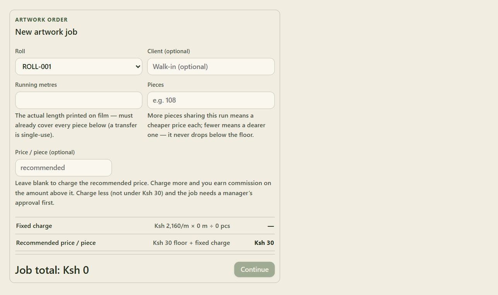
DTF Artwork Order: the roll, running metres used, pieces, the heat press fee and the price per piece.
Artworks of different sizes, or for different clients, on one length (price each size)
On DTF Artwork Order and UV DTF Artwork Order, tick Artworks of different sizes, or for different clients — price each size when one length of film carries artworks that should not all cost the same, or that belong to different clients. Enter the roll, the running metres and the number of artworks on the length as usual (the box keeps its place; it is labelled Artworks on this length) — together they give the recommended price shown below, the base you are pricing against. Then share those artworks into rows, one for each size: the client (leave it blank for the order's own client), the size or what it is (for example 5 × 5 cm), how many artworks and the price of each. + Add a row adds more.
The rows can never take more artworks than the length carries: the number of artworks on the length must be entered first (the row boxes wait for it), the screen counts down how many are still to place, and a row cannot be given more than what the other rows have left (a larger number is brought down to what is left, with a note). The sheet is recorded only when all of them are placed, and the rows add up to at least the recommended total for the whole length: the usual formula, worked out on all the artworks together — the charge per running metre × the running metres, shared equally between all the artworks (for example 3 m at 3,780 a metre with 140 artworks: 3,780 × 3 = 11,340, which is 81 for each artwork). The cost is shared by the number of artworks, not by their size, so the recommended price of every artwork is the same; the rows are free to charge sizes differently — the large ones more, the small ones less — as long as the total is not below it. The screen shows the recommended total, your total, and what is above (or short). A sheet that is short cannot be recorded, and no artwork may be priced under the minimum per piece.
One order for each client. Rows with the same client make that client's order, with one line for each size (100 × 5 × 5 cm); a row with no client goes to the order's own client. In the box that opens (Continue) you choose the heat press fee (DTF), who the sale is credited to (the front office), and for each client their phone and what they pay now — in full, part or later — then Record creates the orders and offers each client's receipt or invoice to print.
A client may pay less than their share when another pays more. The screen shows each client's total as a percentage of their share of the recommended total so it is clear who is paying more. Nothing waits for approval, because the sheet as a whole is never below the recommendation.
The film comes off the roll once, as the metres entered. Each client's order carries its share of those metres by number of artworks, and they add up to the metres entered.
Commission is on what the whole sheet brings in above the recommended total (the usual artwork share of the extra, as the clients pay), not on each client's own premium: moving a price from one client's artworks to another's earns nothing. A freelance sales person cannot be credited with a sheet.
5.4a UV DTF Film Order Staff
Open UV DTF Film Order. It works exactly like the DTF Film Order, but sells printed UV DTF film from a UV DTF roll (a 30 cm wide, 50 metre roll). Choose the open UV- roll, the client and the metres.
The standard price is KES 1,500 a metre, VAT included. The price can be raised; it cannot go below the floor of KES 1,200 a metre.
Commission is the same as on DTF film: what you charge above the floor earns a share, by the same table (Commission → Rates), as the customer pays.
Press Continue to take the client's details, any blank items sold with it and the payment. The order is numbered U-6001 and up and sits under its own line of business, UV DTF Printing.
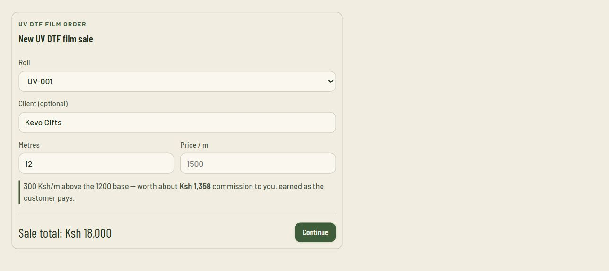
UV DTF Film Order: the roll, the metres and the price per metre (KES 1,500 unless changed, never below 1,200), and the sale total.
UV Pen Costing (a tab on the UV DTF Film Order)
The UV DTF Film Order screen has three tabs: Film sale, UV Pen Costing and UV Flatbed (below). UV Pen Costing is a price picker for UV-printed pen branding: enter the number of pens (type it, use − and +, or tap a quick pick: 10, 20, 50, 100, 250, 500, 1,000, 1,500) and the screen shows the price per pen and the total to charge, so nobody has to ask for the price. Clear starts again.
The whole order is charged at one rate, set by its quantity — not stepped. To start with: 1–99 pens 20/=, 100–499 pens 15/=, 500–1000 pens 12/=, 1001 and over 10/=. For example 450 pens come to 15/= each, 6,750/= (VAT included, as every price in the system is). The tier the order falls in is highlighted.
Upsell. When the customer is a few pens short of a cheaper tier the screen says so — Add 50 more pens (500 total) → 12/= each. Customer pays 750/= less overall — and Set to 500 pens changes the quantity in one tap. (When the extra pens would cost more in total, it says what the total becomes instead.)
Unit price discount — subject to approval. Under Unit price discount, choose Ksh off each pen or % off the unit price and type the amount. Finance Manager, General Manager and Admin give it straight away: whatever they type is the discount. Everyone else asks: once the number of pens is entered, press Ask for approval. The request waits under the box (waiting for approval) and appears for Finance, the General Manager and Admin under Waiting for your decision, where they press Approve or Turn down (a reason is needed to turn it down, and nobody approves their own request). Once it is approved, press Refresh, then Apply the approved discount: the price drops (a 15/= pen with 2/= off is 13/=) and the order can be captured. An approval is for that job only and is used once: change the quantity and it must be asked for again. The system takes the discount from the approved request, never from what is typed on the screen. For example 450 pens at 15/= are 6,750/=; with 2/= off each, 450 × 13 = 5,850/=. The cheaper-tier hint is not shown on a discounted order.
The rates are kept in the system. Anyone with DTF access sees them; only an Admin changes a rate, by tapping it, or uses Edit tiers to change where a tier starts, add a tier or remove one (the first always starts at 1 pen). A change applies to everyone at once.
Capture as order. Once the customer agrees, press Capture as order under the price. The usual order popup opens — client name and phone, who brought the order, any merchandise sold with it, and how it is paid (in full, part now, or later) — and Print creates the order and prints the receipt or invoice. The pens go on the order at the rate for their quantity (the system works the rate out again itself, so it always matches the tiers), under the price-list service UV Pen Branding. It is an ordinary order: it appears in All Orders with a U- number, goes through Production, and a client you sourced counts as it does on any general order. No roll is used.
UV Flatbed (a tab on the UV DTF Film Order)
The UV DTF Film Order screen has a third tab, UV Flatbed: a price picker for printing diaries and other flat items on the UV flatbed. Enter the size of the artwork in cm — the part that is printed, not the whole diary — as width × height (or tap a size such as 5 × 5, 10 × 15, A5, A4 or Full 30 × 50) and the number of pieces. The screen shows the band the artwork falls in, the price per piece and the total to charge. Anything you type under What it is (for example 2027 diary covers) goes on the order.
The artwork is priced by its area, in bands: every 150 cm² (about an A6) costs 50/=, up to 500/= for the full 30 × 50 cm. To start with: up to 300 cm² 100/=, 301–450 cm² 150/= (an A5 cover), 451–600 cm² 200/=, 601–750 cm² 250/= (an A4), 751–900 cm² 300/=, 901–1,050 cm² 350/=, 1,051–1,200 cm² 400/=, 1,201–1,350 cm² 450/= and 1,351–1,500 cm² 500/=. The band the artwork falls in is highlighted. Nothing is worked out from how many diaries fit the bed: each diary is charged for its own artwork.
Minimum price for a piece. A very small artwork (a logo, a few words) is never charged less than the minimum, 100/= to start with. When the minimum is more than a band's price, the screen says the minimum price for a piece.
Volume discount — applied by Finance, the General Manager or an Admin. A bigger run earns a discount on the whole run, set by how many pieces there are — to start with 1–19 none, 20–49 5% off, 50–99 10% off, 100 and over 15% off — but it is not given automatically. Under Discounts, the box Apply the volume discount can be ticked only by Finance Manager, General Manager or Admin; for everyone else it is greyed out and the screen says what the run would earn (This run earns 5% off. Ask Finance, the General Manager or an Admin to apply it). When the customer is a few pieces short of the next discount, the people who can apply it also see that, and Set to … pieces changes the quantity in one tap.
Unit price discount — subject to approval. Under Unit price discount, choose Ksh off each piece or % off the unit price and type the amount. Finance Manager, General Manager and Admin give it straight away: whatever they type is the discount. Everyone else asks: once the artwork size and the number of pieces is entered, press Ask for approval. The request waits under the box (waiting for approval) and appears for Finance, the General Manager and Admin under Waiting for your decision, where they press Approve or Turn down (a reason is needed to turn it down, and nobody approves their own request). Once it is approved, press Refresh, then Apply the approved discount: the price drops (a 150/= piece with 10/= off is 140/=) and the order can be captured. An approval is for that job only and is used once: change the quantity or the size and it must be asked for again. The system takes the discount from the approved request, never from what is typed on the screen. It comes off the price of each piece first, and then the volume discount, if it is ticked, comes off the printing. A discount as big as the price of a piece, or 100%, is refused. The volume discount is not asked for: only Finance, the General Manager or an Admin applies it.
Setup fee is optional. Tick Add the setup fee (200/= to start with) when the job needed a layout; it is added once to the job, after the discount. Leave it unticked and nothing is added.
An artwork bigger than the largest one (30 × 50 cm, either way round) gets no price; the screen says so. VAT is included, as every price in the system is. For example 20 A5 covers are 20 × 150 = 3,000/=; with the volume discount applied they are 2,850/=, and with 10/= off each piece as well, 20 × 140 = 2,800/= less 5% = 2,660/=.
The prices are kept in the system. Anyone with DTF access sees them; only an Admin uses Edit prices to change the minimum price for a piece, the setup fee, the largest artwork, each band (where it ends and its price) and the volume discount lines. The last band must reach the largest artwork. A change applies to everyone at once.
Capture as order. Once the customer agrees, press Capture as order. The usual order popup opens (client, who brought the order, merchandise sold with it, payment) and Print creates the order. It has one line, UV Flatbed Printing, for the whole job, with the size, the pieces and the band after the name (20 × 14.8 × 21 cm (301–450 cm² band) · 10/= off each · 5% volume discount, showing the discounts that were given). The system works the price out again itself, so it always matches the settings, and it refuses a discount from anyone but Finance Manager, General Manager or Admin. It is an ordinary order, with a U- number, counted under the business head UV Printing and as UV Flatbed Printing in Where your sales come from.
5.4b UV DTF Artwork Order Staff
Open UV DTF Artwork Order. A customer's design printed on UV DTF film and sold per piece, priced exactly the way DTF artwork is, on the same screen, with the same sheet for artworks of different sizes or clients and the same approval of a lower price: a charge for every running metre of film (KES 4,280 to start), shared equally between the artworks on it, with a base price of KES 40. The only differences are that UV DTF has its own rolls, setup and price (DTF → UV DTF → Artwork price) and no heat press fee.
Price per piece = charge per running metre × running metres ÷ pieces. A metre carrying 107 pieces is KES 40 each, KES 4,280 for the metre. Fewer pieces on a metre cost more each, more pieces cost less; the whole metre is always paid for, so the client bears the empty space. The base price is 40: when an artwork's share of the film comes to less than 40 (more than 107 pieces on a metre at 4,280), the recommended price is 40 each instead. This is the same small-share rule as DTF's, set for UV DTF at 40 → 40 in UV DTF → Setup.
A price above the recommended one earns commission on the extra (the same share as DTF artwork). A price below it (not under the lowest price per artwork in Setup, if one is set) is a discount and goes to a manager for approval before it can be paid for or produced.
There is no heat press fee: UV DTF stickers are applied cold. Blank items such as mugs or phone cases can still be added from stock when you press Continue.
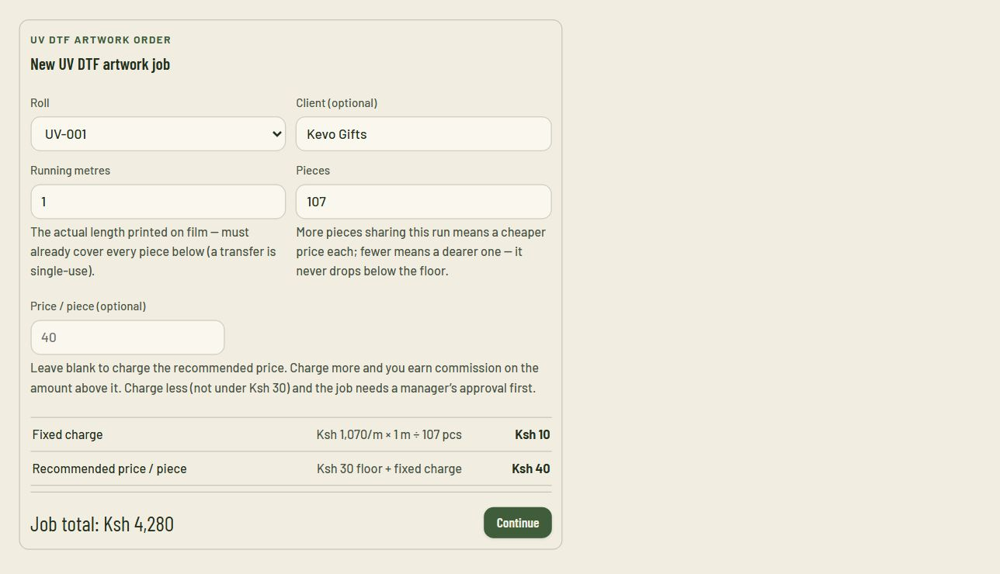
UV DTF Artwork Order: 107 pieces on one running metre — KES 4,280 for the metre shared by 107 pieces, KES 40 each.
5.5 Embroidery Order Staff
Embroidery is priced by stitch count first, with a quantity price shown alongside for comparison. Open Embroidery Order.
The job. Enter the number of pieces (garments). Tick Client supplies the artwork / design if they bring it — no design-origination fee is then charged; untick it when you make the design.
Designs — one per placement (left chest, back…). For each, enter the design name and the stitches. Two price cards appear: By stitches and By quantity. The quantity price is always the stitch price less a quantity discount, so it is never higher. Staff choose either. Choosing the lower quantity price can send the job to the approval queue; a different price per piece can be typed, and anything below the amount shown goes to a manager.
Tick Keep this design for repeat orders to save it. On the next order press Repeat order — pick a saved design to reuse its stitch count; the set-up fee is waived on a repeat, and from 100 pieces.
Garments sold with the job. Add blank garments from the stock list with + Add a garment; they are separate lines.
What goes on the order lists the embroidery line, the digitizing set-up line and any design origination line — each on its own line so they stay visible on the invoice and in reports. The Compare table prices the same design by stitches and by quantity at 1, 6, 12, 25, 50 and 100 pieces, with this job highlighted.
Take the payment as for any order. Embroidery counts towards monthly sales targets like every other sale.
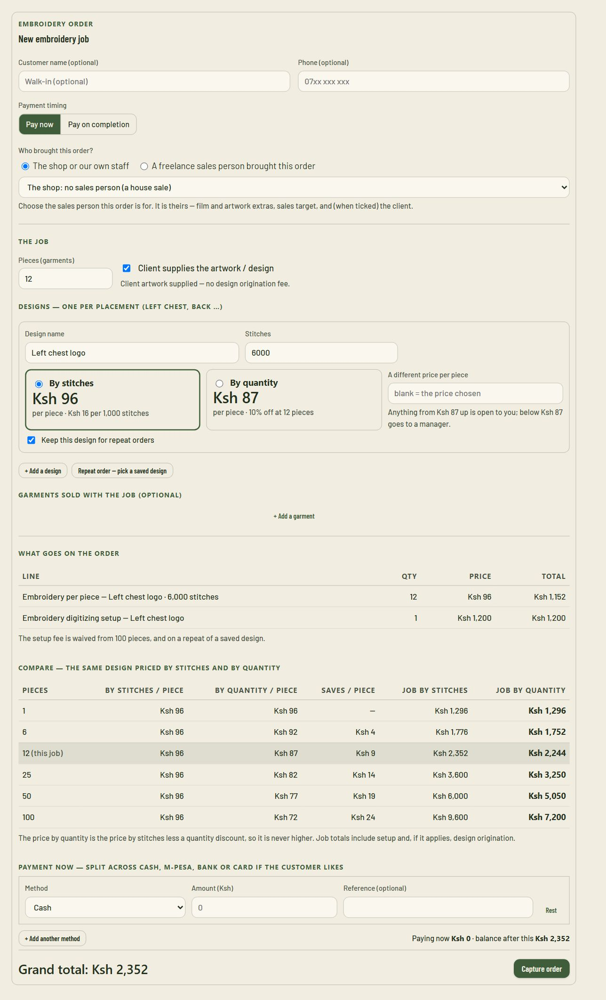
The job and its designs: pieces, design name, stitches and the two price cards.Further down: what goes on the order, the stitches-versus-quantity comparison, and payment.
ReportsReports → Embroidery Profitability shows revenue less thread and needle consumption and the other costs, so you can see whether stitch-count pricing is earning its keep.
5.6 UV, large format, laser and everything else
These are sold through General Order from the service price list: each service has a unit (piece, sqm, per metre), a price and a business head. Set them up once in Master Data → Service Price List and every sale lands in the right line of business automatically:
Line of business
How to sell it
UV printing
Services such as UV flatbed prints priced per piece or per sqm; blanks (phone cases, signage boards) as stock items.
Large format
Banners, vinyl, canvas, posters priced per sqm. Work a supplier prints for you is costed under Sales → Job Costing (section 5.9).
Laser engraving
Engraving services per piece with the item as a separate stock line.
5.7 Work a supplier makes (outsourced jobs)
There is no Contracted out option on the price list, and the General Order does not take a supplier's quote: every service on the price list is sold at its price. Work a supplier makes for you — business cards, signage, eulogies, company profiles, brochures — is costed in Job Costing (section 5.9), saved as a quote and, once the client accepts, captured as an order. That order is sent to the supplier and carries a supplier bill:
On the order, enter the supplier and the amount charged (VAT included). Record the payment: paid in full, a deposit with the balance owing, or not paid yet.
The bill is treated as the job's cost, so its profit is visible. The balance sits in Accounts Payable and is paid under Finance → Expenses.
The job is sent to the supplier from Production, received back, then goes through Quality Control like any other.
Track every outsourced job under Production → Outsourced jobs.
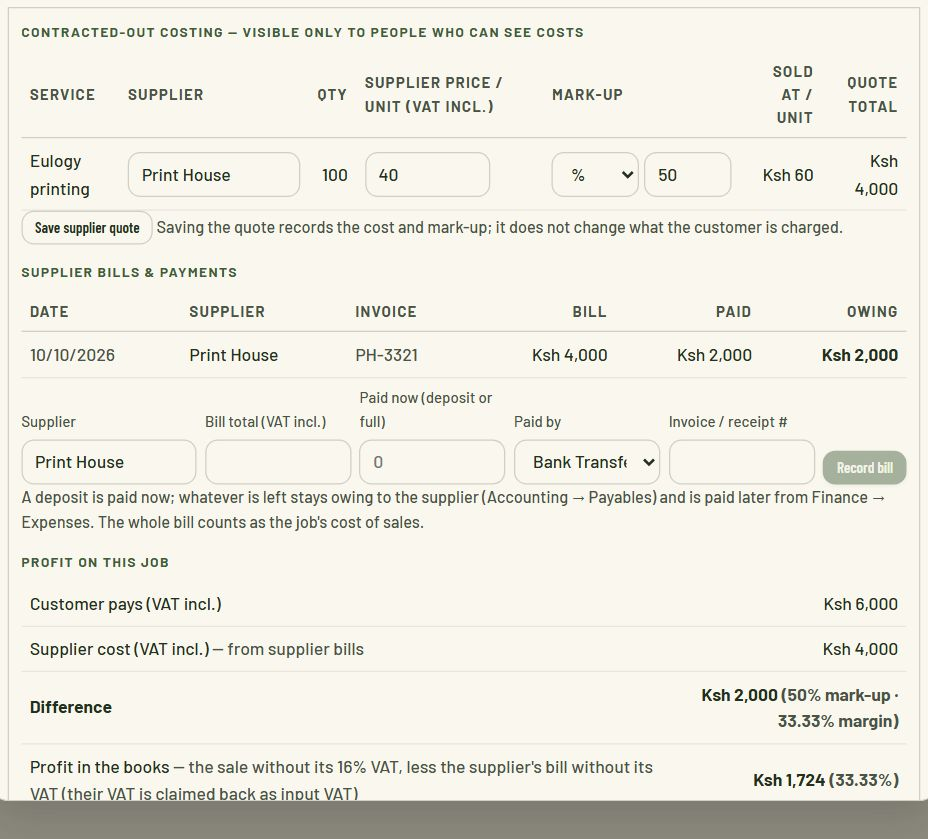
On an outsourced order (visible only to people who can see supplier costs): the supplier's quote and mark-up on each line, and the supplier bills with what has been paid and what is still owing.
5.8 Freelance sales persons
People outside your staff who bring you work are registered under Commission → Freelancers and selected when an order is captured. They are paid weekly commission from their own account, with withholding tax deducted (section 14).
Open Sales → Job Costing to work out the price to quote for a job the suppliers will make. It is a calculator: nothing is saved or sent, and it is for three kinds of job — business cards, indoor signage and outdoor signage.
Pick the job. For business cards choose the finish (plain, laminated or frosted) and the number of cards. For signage enter the quantity, width and height in metres.
See what goes into the cost. The materials and services the job is made of are listed with a tick. Untick a line the job does not need (say no laminate) and tick an optional extra it does (say delivery).
Quote the price. The screen shows the price to quote before VAT, the VAT (16%), what the customer pays with VAT and the price per card or per sign. For business cards a table shows the price at 100, 250, 500, 1,000 and 2,000 cards.
Save as quote to print, email or WhatsApp keeps the costing for the client (see When the client accepts below); until you save it, the calculator stores nothing. The quotation itself — to print, email or send on WhatsApp — is made from the saved quote.
Saved quotes and capture: after the steps above, see When the client accepts further down.
How the price is worked out. Each material and service is a supplier rate charged per A3 sheet (business cards), per sqm (signage; the material includes the wastage allowed), per unit or once per job. Business cards use 21 to an A3 sheet plus 1 spare sheet (both can be changed). The rates add up to the production cost, and the price is that cost plus the job's margin as a markup on cost — price = cost × (1 + margin %). For example 500 plain cards: 25 A3 sheets × (printing 120 + cutting 40) + design & setup 500 = KES 4,500; with a 40% margin, KES 6,300 before VAT (KES 7,308 with VAT).
Who sees the marginEveryone who costs a job sees the cost lines — each material and service with its supplier rate and amount — and the production cost, as well as the price to quote. The margin and the profit are shown only to people who may see costs — Finance, the General Manager and Admin (Master Data → Roles & Access) — who can also change the margin for a quote.
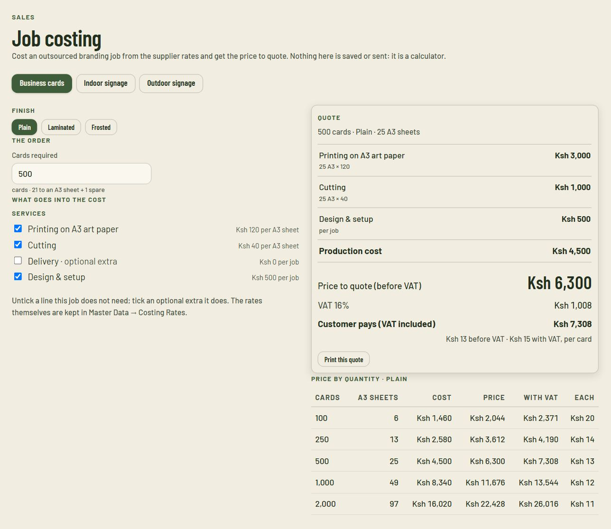
Sales → Job Costing, as a salesperson sees it: 500 plain business cards — the cost lines, the production cost (KES 4,500) and the price to quote (KES 6,300 before VAT, 7,308 with VAT), without the margin.
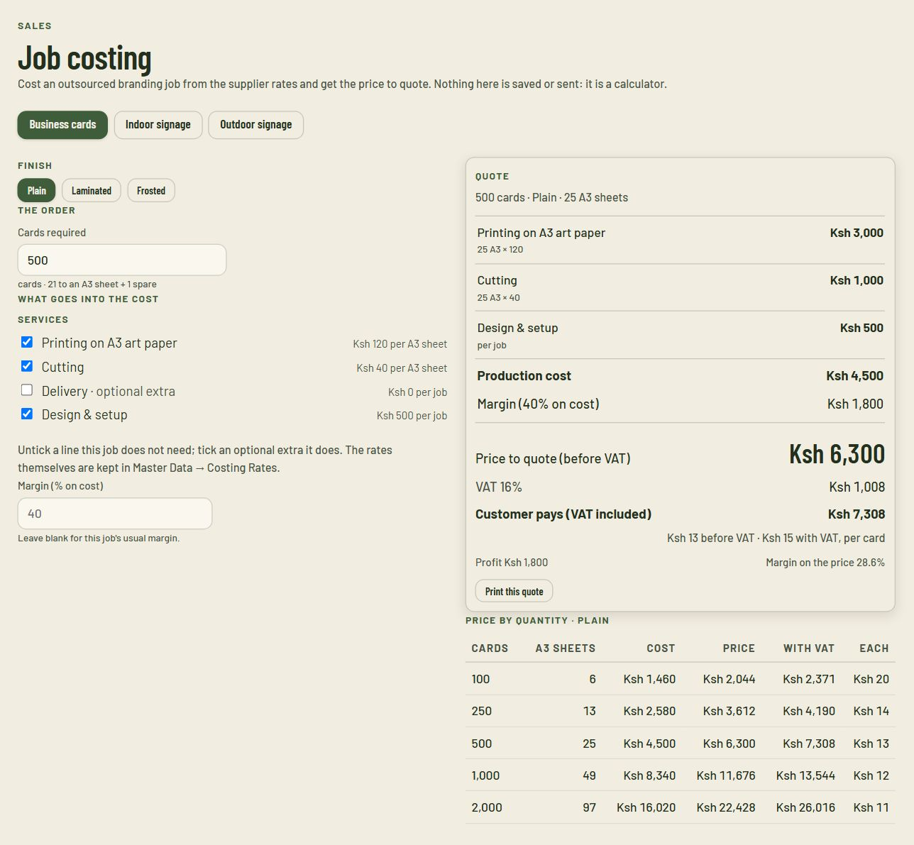
The same costing as Finance, the General Manager or Admin sees it: the same cost lines and production cost, plus the 40% margin and the profit.
The quotation: print, email, WhatsApp
Open a quote under Saved quotes and use the same three buttons as on an invoice or quotation in Finance: ✉️ Email quotation (type the address; the A4 quotation goes as a PDF attachment), 💬 WhatsApp quotation (send it straight from the system when WhatsApp is set up, or share the PDF from your device, or open the customer's chat) and 🖶 Print quotation (A4). It is the house quotation layout, the same as in Finance: your logo and company details, the client, the salesperson, the quote number and date, valid until, one line for the job, the total before VAT, the VAT and the total with VAT, and the terms. It shows the price the client is quoted — the price agreed with them once that is recorded (and approved, if it was under the lowest margin), otherwise the first quoted price — and never the cost lines or the margin. Send it again after the agreed price changes and it carries the new price. The WhatsApp panel keeps a short history of what was sent, to whom and by whom.
What the client reads. The quotation and the order made from it describe the job the way the client orders it, with none of our production detail: a card job is 1000cards-laminated (quantity, then plain, laminated or frosted), not the number of A3 sheets it takes. The Job Costing screens still show the sheets, for you. Quotes saved earlier are brought into the same wording the first time the system starts after this update.
When the client accepts: saved quotes, the agreed price and capture
Press Save as quote (with the client's name) to keep a costing as a quote, numbered CQ-1001 and up, valid for 14 days. The cost lines are kept as they were, so a later change to a supplier rate does not change a quote already given. The quotes are under Sales → Job Costing → Saved quotes: salespeople see their own, Finance, the General Manager and Admin see them all.
Record the price agreed. Open the quote and enter what the client has agreed to pay, VAT included — the same as the quote, or lower after bargaining. The screen tells you the lowest price you may agree without approval (the cost plus the job's lowest margin, 30% to start with).
Under that limit, a manager decides. A price below it is marked Waiting for approval and the order cannot be captured until Finance, the General Manager or Admin approves it, or rejects it with a reason so a new price can be agreed. They cannot approve a price they quoted themselves. A price below what the job costs us is never accepted.
Capture as order. Once the price is agreed (and approved if it needed to be), Capture as order makes an ordinary order at the agreed price, in the salesperson's name: confirm the client's name and phone, tick I brought this client if you did, take the payment or choose pay on completion, and the invoice or receipt prints. The job's cost is kept on the order's line so Finance sees its profit and records the supplier's bills against it, and the quote becomes Ordered. A quote the client turns down is marked Lost, with the reason.
What the salesperson earnsNothing special: it is the order's money received, net of VAT, counted like any other sale to a client they brought, in the month it is paid — so a price agreed lower means a smaller sale and a lower credit, and only money paid to the company counts. A quote cannot be credited to a freelance sales person.
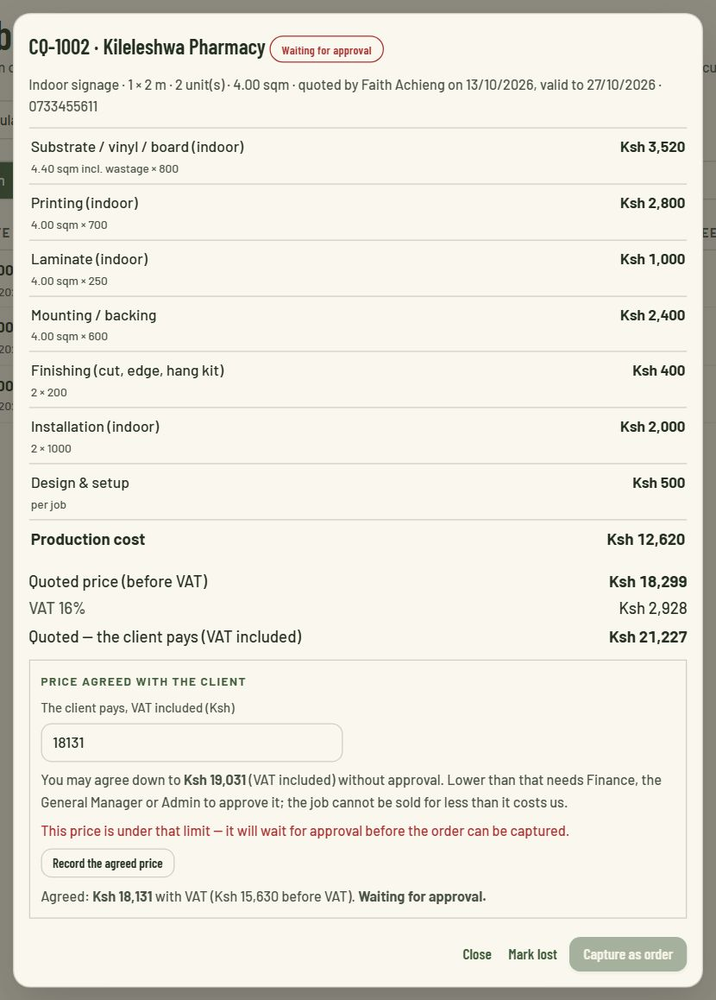
A quote with the client's price recorded below the limit: the lowest price that needs no approval is shown, and the order cannot be captured until a manager approves it.
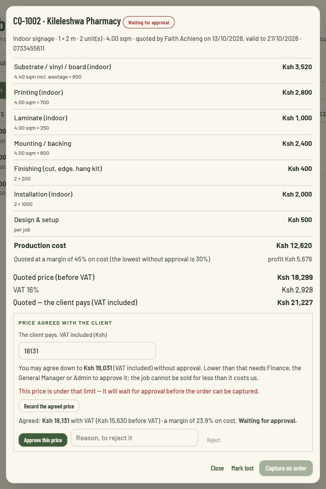
The same quote as Finance, the General Manager or Admin sees it: the margin, and Approve this price or a reason to reject it.
The rates: Sales → Job Costing → Rates
An Admin keeps the rates on the Rates tab of Sales → Job Costing (only an Admin sees that tab), in two lists — Materials (boards, vinyl, banner, laminate and frosting film, frames) and Services (printing, cutting, mounting, finishing, installation, design, transport). Each line has:
a name and what the supplier charges us (VAT not included);
costed on — one or more of business cards, indoor signage and outdoor signage;
charged — per A3 sheet, per sqm (with or without wastage), per unit or per job (only the ways that suit the jobs it is used on are offered);
in a new costing — ticked, or an optional extra; for business cards it can be limited to laminated or frosted cards only.
Edit changes a line (a new supplier price shows in the next costing at once), untick "On the list" keeps a line but leaves it out of every costing, and Delete removes it. Add a material and Add a service at the foot of each list add new ones, which then appear in the costing for the jobs you chose. The same screen holds each job's margin, its lowest margin without approval (how far a quote may be bargained down), the signage wastage, and the cards per A3 sheet and spare sheets for business cards. The figures a new system starts with are samples — replace them with the real supplier rates.
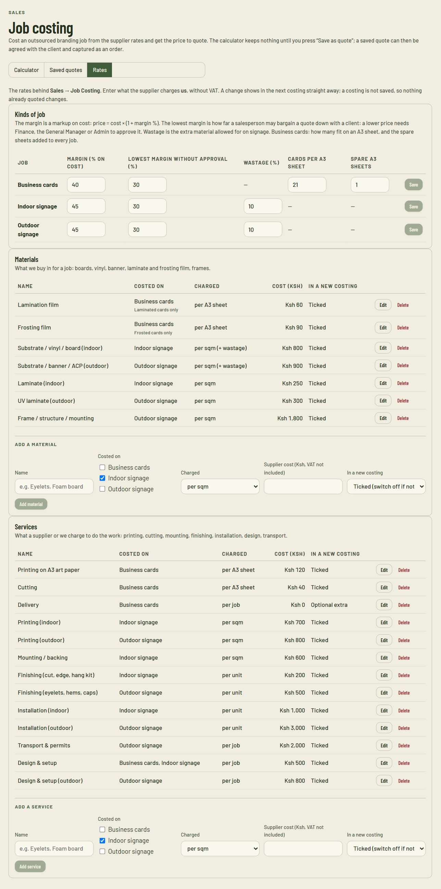
Sales → Job Costing → Rates: each kind of job's margin, lowest margin without approval, wastage and cards per A3 sheet, then the Materials list (and, below it, Services), each with the supplier cost, how it is charged and where it is used.
Checking supplier prices
On the Rates tab of Job Costing (and on Brochures & eulogies → Rates) an Admin can press Supplier price-check sheet (Excel). It lists every material, service, paper and fee that Job Costing costs a job from — the card and signage materials and services, the A3 paper for each side, and the stapling, trimming, folding, lamination, design, proofing and delivery fees — with what each is charged on (per A3 sheet, per sqm, per job…), which jobs it is used for, the rate the system holds today (VAT excluded), and blank columns for three suppliers' quotes. Take it to the suppliers, then type the new rates into the Rates tabs.
Brochures & eulogies
Beside Business cards, Indoor signage and Outdoor signage is a fourth tab, Brochures & eulogies, for eulogy booklets, company profiles and brochures that a printer makes for you. It has three parts:
Calculator. Choose the product. For a eulogy or company profile: the pages (4, 8, 12 … 32 — four pages to an A3 sheet, always printed both sides), the inside paper, and whether to use a separate cover paper (it takes the place of one inside sheet), laminate the cover and fold / crease. For a brochure: the size (A4, two to an A3 sheet, or B5, four), single or double side, the paper, and whether to laminate. Then enter the copies or pieces. The screen shows the price per copy / piece with VAT, the job total and the cost lines behind it (sheets, cover, lamination, stapling, trimming, folding, design, proofing and delivery; brochures add the wastage sheets).
Price list. The price of one copy (pages 4–32 at 25, 50, 100, 250 and 500 copies) or one piece (A4 / B5, single / double side at 100 to 5,000 pieces), VAT included, for the paper you choose.
Rates (Admin only). The printer's price for an A3 sheet for each paper (one side, two sides), the fees (stapling, trimming, folding and lamination per set or sheet; design, proofing and delivery per job; brochure wastage) the markup tiers (by default 50% from 1 copy, 35% from 100, 25% from 500) and the lowest margin without approval (30% to start with). The figures that come with the system are placeholders: enter the printer's real quotes before using it.
The price is the cost plus the markup for the quantity, plus VAT. As elsewhere in Job Costing, everyone sees the cost lines and the price; the markup, the profit and the choice between a markup by quantity and a flat markup are for Finance, the General Manager and Admin only. Press Save as quote with the client's name to keep the costing as a saved quote, numbered CQ-1001 and up like the signage quotes, valid for 14 days, with its cost lines frozen as they were. It then goes through the same steps as any other saved quote under Saved quotes (read the section above): record the price agreed with the client (a price below the lowest margin waits for Finance, the General Manager or Admin to approve it; one below cost is refused), and when the client accepts, capture it as an order — one line for the whole job at the agreed price, credited to the salesperson, with the printer's cost kept on the line for Finance. The order goes to the supplier under Production → Outsourced jobs like other costed jobs.
Finding orders again
All Orders lists orders with an order date column, search by order number and date, and four summary figures that open to show what is behind them. Staff see their own orders; roles with View all orders see everyone's. So that the screen opens quickly, it lists the last 120 days and every order still open (not completed, or handed over on credit with a balance), however old; the note at the top says so, and Show all orders loads the lot. Searching for an older date or an order number that is not in the recent list switches to all orders by itself. Click any order to open its detail: lines, payments, stage, print, email, WhatsApp, and every action in the sections that follow.
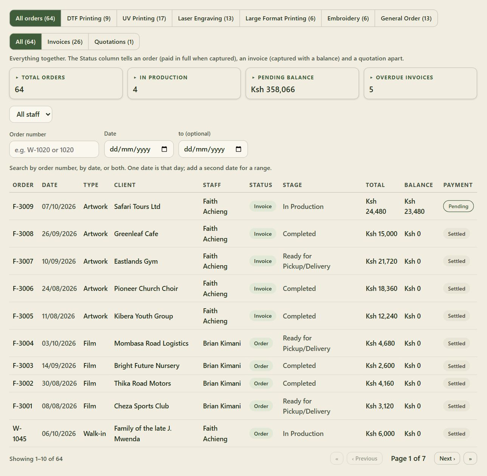
All Orders: the four summary figures, a tab for each line of business, search by order number and date, and one row per order with its balance and payment status.
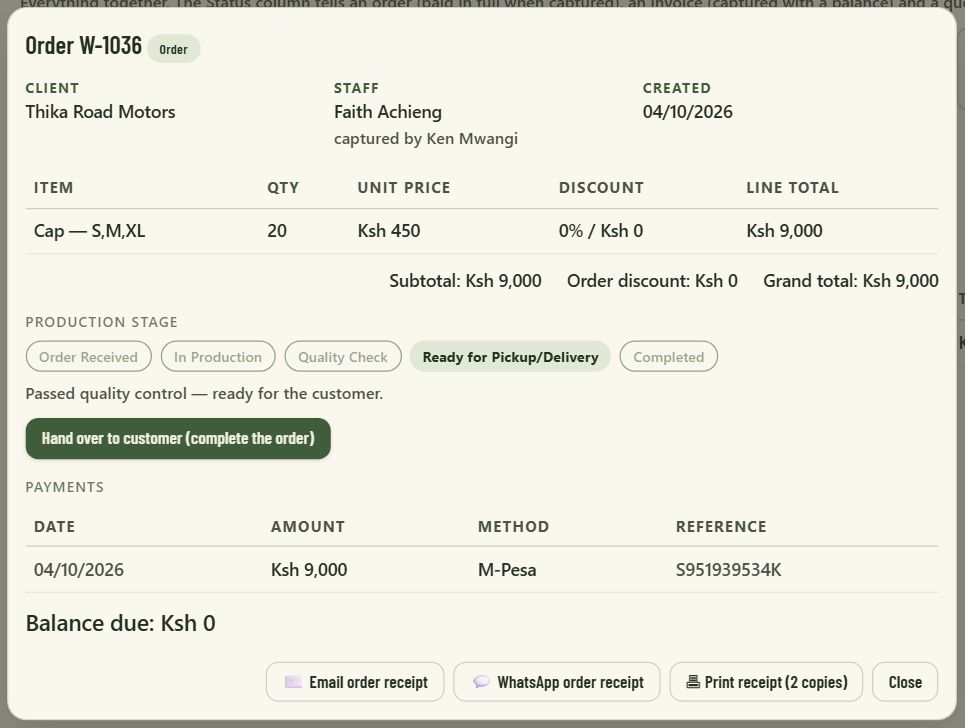
An order opened: lines, totals, its position on the production ribbon, payments received, and the buttons to email, WhatsApp or print the receipt. This one has passed quality control and is ready to hand over.
6Taking the money
At capture
The payment panel on the order form accepts any mix of Cash, M-Pesa, Bank Transfer and Card (for example half cash, half M-Pesa). The total must not exceed what is owed.
Later, on an order
Open the order and use Record payment. Recording a payment needs the Payments permission, or being the person who captured that order (the cashier at the till).
Deposits are normal: pay part now and the rest later. The order shows its balance due.
Payments → Pending Payments lists every order with a balance; Paid lists settled ones. Both filter by date.
M-Pesa STK push
Choose M-Pesa, enter the customer's phone number and press the prompt button. The customer sees a PIN request on their phone.
The order's payment fills in automatically when the customer approves, with the M-Pesa receipt code.
If the customer paid but the confirmation did not arrive, a manager with the Payments permission can confirm by hand by typing the 10-character code from the M-Pesa SMS. A code that has already been used by another payment is refused.
Payments made straight to your Paybill or Till without a prompt are caught too, once the addresses are registered with Safaricom (Master Data → M-Pesa). NCBA Bank customers get the same STK push and payment notifications on their NCBA Paybill (Master Data → NCBA).
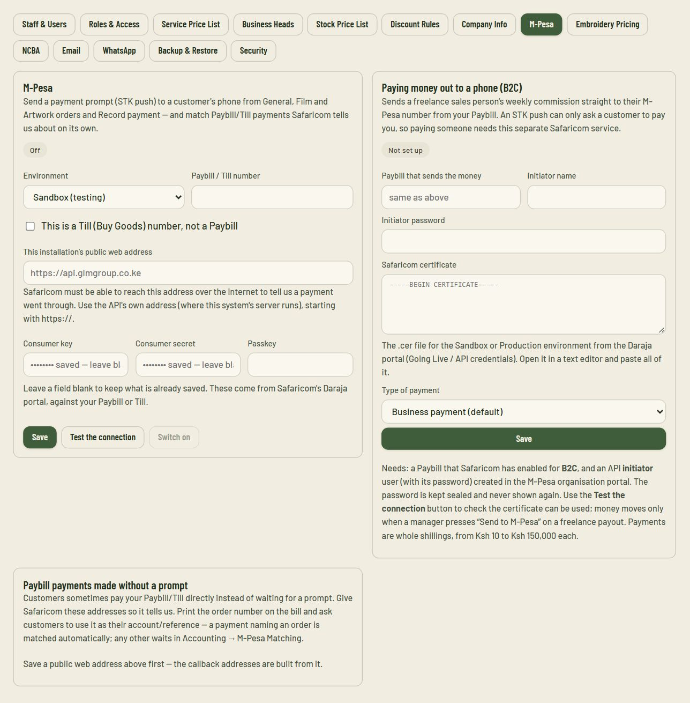
Master Data → M-Pesa: Paybill or Till, environment, and the keys from Safaricom's Daraja portal. Save, test the connection, then switch on.
M-Pesa matching
Accounting → M-Pesa Matching matches M-Pesa statement lines to orders. Upload the Safaricom statement and the system pairs payments by receipt code, phone number and amount, leaving the exceptions for you. Matching works even if you do not use the live integration.
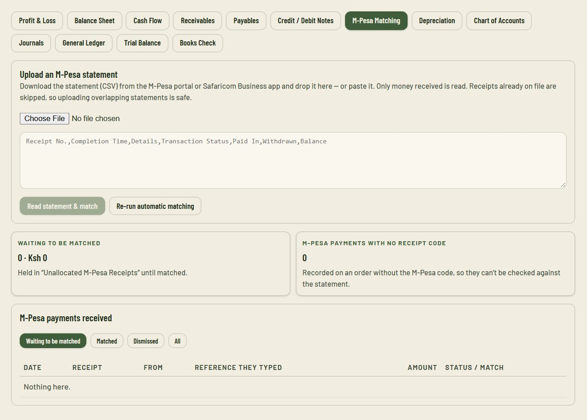
Accounting → M-Pesa Matching: upload the Safaricom statement and the system pairs payments to orders; the exceptions are left for you.
Receipts and documents
Walk-in sales print on the 80 mm thermal printer, two copies. Invoices and quotations print on A4.
Every document carries your logo, registered and trading names, two phone numbers, website and social links from Company Info.
On any opened order, Email order receipt, WhatsApp order receipt and Print receipt (2 copies) send or print the document; email and WhatsApp carry it as a PDF.
7Production and quality control
Production Supervisor assigns · Staff work
Open Production. It has three tabs: Orders & jobs, Staff productivity and Outsourced jobs. Orders captured show under Waiting to be assigned, grouped by line of business.
Assign in-house: pick the staff member under Assign to… and press Assign. Use Reassign to… later if the person changes.
Or choose or send to a supplier… for contracted-out work, and Receive from supplier when it returns.
Under In production, a worker presses Start, then Finish with the units produced. The order is then sent to Quality Check; finishing a job does not complete the order.
The supervisor sees productivity (jobs per person, in a date range) on the same screen.
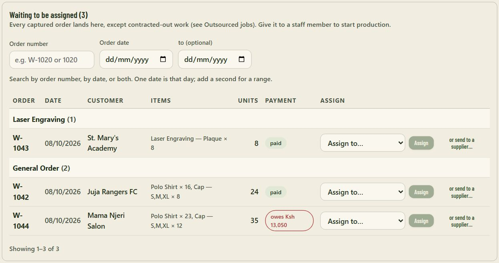
Production → Orders & jobs: everything captured and waiting for a worker, grouped by line of business, with search by order number or date.
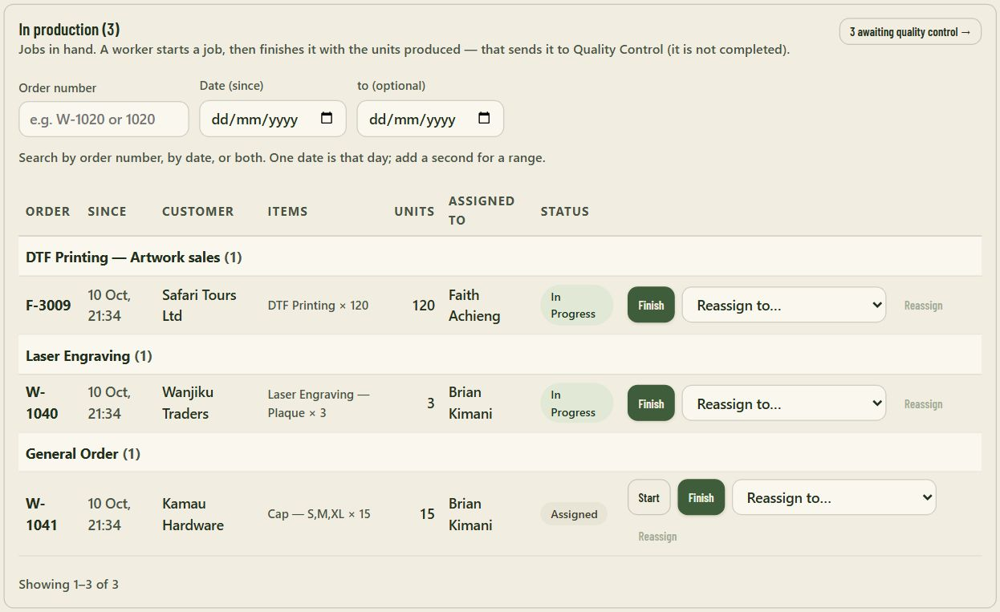
Below it, In production: Start and Finish buttons, and Reassign.
Artwork jobs waiting for price approval and embroidery jobs awaiting approval are held out of the queue until approved.
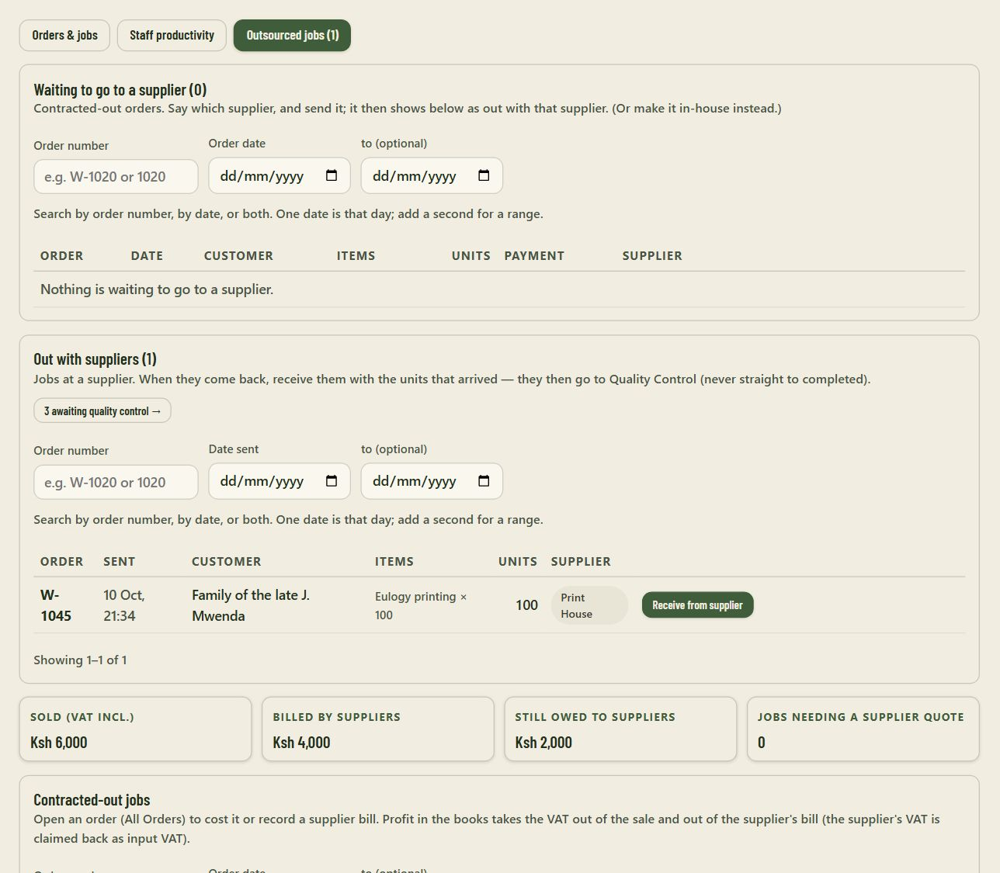
Production → Outsourced jobs: each contracted-out job, its stage and supplier, what it sold for and what it is expected to cost.
Quality Control Supervisor
Open Quality Control and press Inspect on a made job.
Pass: the order becomes Ready for Pickup/Delivery.
Fail: the order goes back to production as rework. The failure is recorded.
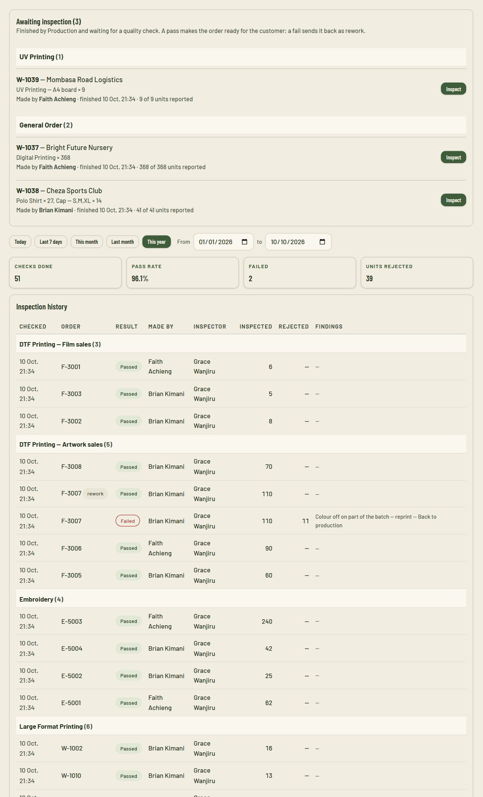
Quality Control: jobs awaiting inspection at the top, and the inspection history with pass rate, failures and units rejected.
The rule that protects youProduction and Quality Control are the only ways an order moves along. Nobody can mark an order completed by hand; it can only be completed by handing it to the customer after it has passed inspection.
8Handing over, credit and corrections
Correcting the sales person on an order
If an order was captured without the sales person it belongs to, or the wrong one was chosen, open the order: under Staff there is Change sales person (or Ask to change sales person). Choose the right person, say why, and send it.
Admin and those who manage commission change it straight away.
The front office, the sales person it is credited to, and whoever keyed the order ask: the request waits in Approvals (under the screen the order came through) until Admin or a commission manager approves it or turns it down. Only one correction can wait on an order at a time, and nobody decides their own request.
Only people whose role is set up to be given orders can be chosen. The order moves to the new person's orders, and their commission and sales target follow it, for the money received on it; captured by does not change. A client credited to the same person goes with the order; a client credited to somebody else stays theirs.
An order paid in a month whose commission has already been approved cannot be moved, because the approved figures would no longer match: the month's approval has to be undone first.
Every correction is kept under Show sales person history on the order: who it was, who it became, why, who asked and who decided.
Hand over
When an order is Ready for Pickup/Delivery, open it. There are two cases:
Order is paid in full
Press Hand over to customer (complete the order). The order is Completed.
A balance is owing
Either take the payment first, then hand over — or press Hand over on credit… then Hand over & convert to invoice. The customer takes the order, it becomes an invoice for the balance, due after the credit terms, and is collected through Accounts Receivable.
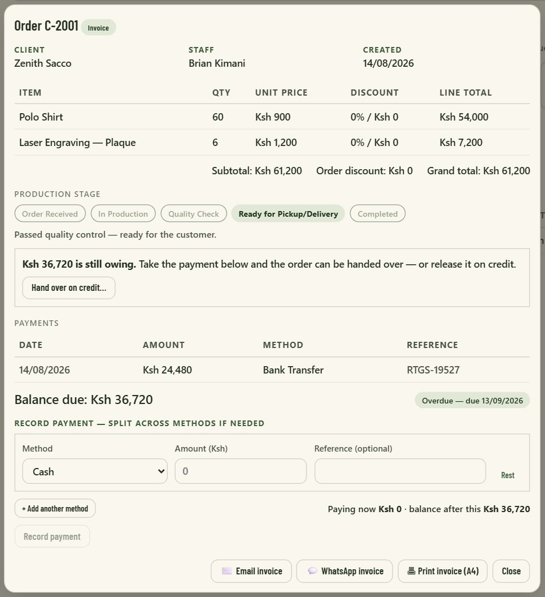
A finished order with a balance still owing (here on a corporate invoice): take the payment, or hand it over on credit, which keeps it in Accounts Receivable.
Credit notes and debit notes
Accounting → Credit / Debit Notes.
Credit note: takes part of a sale (and its VAT) back from a customer — a return, a wrong item or a price correction. It is itemised, and if goods come back to stock you can restock them.
Debit note: charges a customer more after the sale — a change request or an extra.
Supplier debit notes reduce what you owe a supplier and your input VAT.
An invoice is never edited after the fact; corrections are always visible notes, so the paper trail is complete.
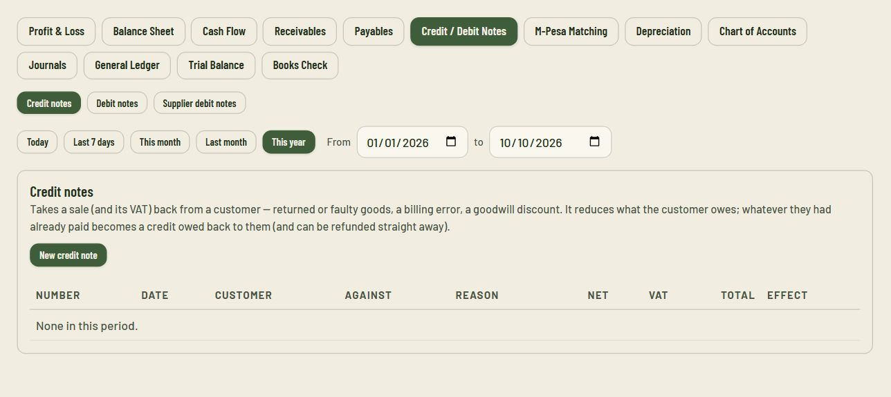
Accounting → Credit / Debit Notes.
9Stock and purchasing
Stock goes up only when goods physically arrive, and down when they are sold or consumed. Reorder alerts tell you what to buy before you run out.
Tab (Stock)
Use it to
Stock Levels
See every item with its price, quantity on hand and reorder level. Items at or below their reorder level are flagged; the same flag appears in Master Data → Stock Price List.
Purchases Requisition
Ask for stock. A requisition has a reference (REQ-0001…) and any number of lines, each with an optional expected unit price (blank = the last price paid).
Purchases Approval
A manager approves or rejects a requisition. A requester cannot approve their own.
Purchases
Raise a purchase order (PO-0001…) from an approved requisition, with the real unit price from the supplier's invoice. The order is held: stock does not rise yet. The store manager receives it, entering the quantity that actually arrived on each line, and stock goes up by what was received. Whoever captured the purchase cannot receive it.
Purchases Reconciliation
Compares, per requisition, what was asked for, bought and received: short deliveries, price variance and quantity variance, each shown separately and adding up to the total.
Stock Take
Count what is on the shelf. The system corrects the quantity at once and keeps the system figure, the counted figure and the variance as an audit record.
China Import Costing
A landed-cost calculator for goods imported from China, so the true cost per unit — not just the supplier price — is known before you set a selling price.
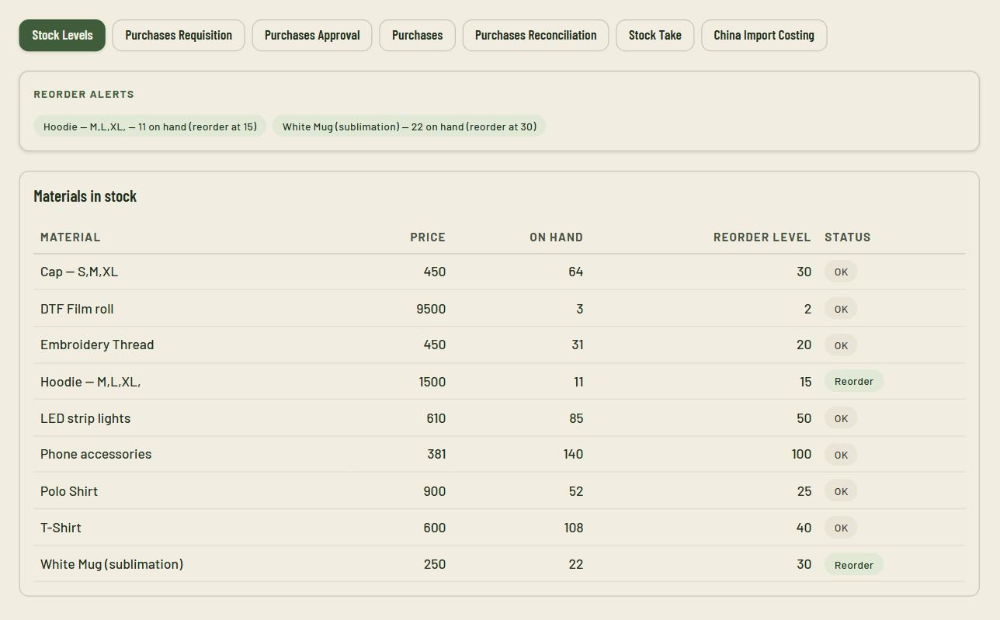
Stock → Stock Levels: every item with its price, quantity on hand and reorder level; low stock is flagged.
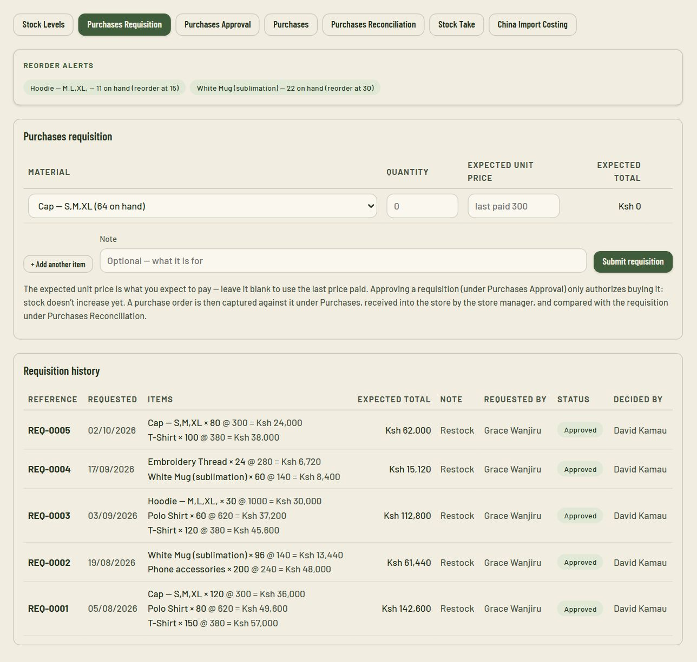
Stock → Purchases Requisition: raise a requisition with lines, quantities and expected unit prices.
Every purchase line and expense can be tagged to a business head, so Reports can show the cost of each line of business.
10The DTF roll tracker
For DTF shops, film is the biggest cost and wastage is the biggest leak. The DTF module follows each roll from the day it is installed to the day it is closed.
Tab
What it does
Dashboard
Roll-by-roll results: revenue, cost, profit, film used and wasted, and a table of what discounts cost — revenue at full price against revenue actually received.
Rolls
Install a new roll with its length and the real film, ink and powder costs. Close it (with confirmation) to work out wastage; Terminate it if it has physically run out while the system still shows a balance; reopen if closed by mistake.
Film Sales
Printed film sold by the metre, with price, amount paid and who captured it.
Artwork Jobs
Customer artwork priced per piece, the recommended price, the price charged and its heat press fee.
Price Approvals
Lower-than-recommended artwork prices waiting for a manager, with the discount and the roll's profit with and without it. Below them is the report of approved price changes: one row for each, with the date requested, the order, roll, client and pieces, the suggested price (the recommended price per piece), the approved price per piece, how far below the suggestion it is and the discount, who asked, who approved and the date approved, with the total given away. Filter it by the dates requested, Download (CSV) for a spreadsheet, or Print. Rejected requests are listed under it with the reason. DTF and UV DTF each have their own.
Artwork price
The price per running metre of artwork, on its own so it can be changed whenever it should move: type the new price and press Save price. It applies to new orders from that moment (jobs already recorded keep the price they were saved with). Below it, Try it on a run of film shows what a length with so many artworks comes to, and Recent changes lists who set what and when. Each product (DTF, UV DTF) has its own price. Managers can also change it straight from the artwork order screen: Price per running metre: Ksh … — change.
Setup
The film price band, the charge per running metre for artwork (shared between the artworks on the length) and a lowest price per artwork (30 to start; 0 for none), the small-share rule (an artwork's share of the film below 30 is recommended at 40 for DTF; below 40 at 40 for UV DTF), the wastage tolerance (5% to start; set your own).
Who sees whatPeople who only record sales and jobs see Film Sales and Artwork Jobs; roll costs are never sent to them. People with DTF: rolls, costs & profit see the rest. Prices stored with each sale are fixed at the time, so changing Setup never rewrites history.
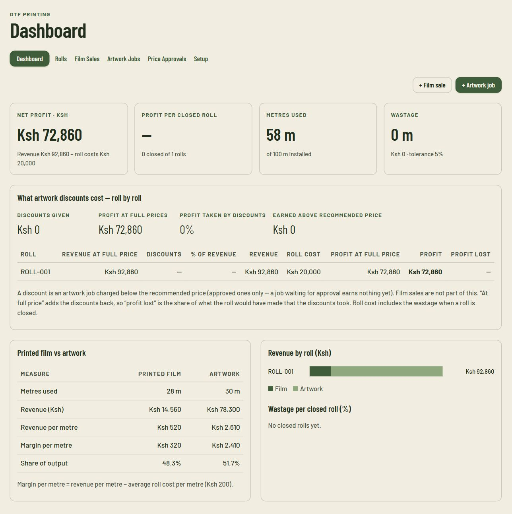
DTF → Dashboard: net profit, metres used and wastage, what discounts cost roll by roll, printed film versus artwork, and revenue by roll.
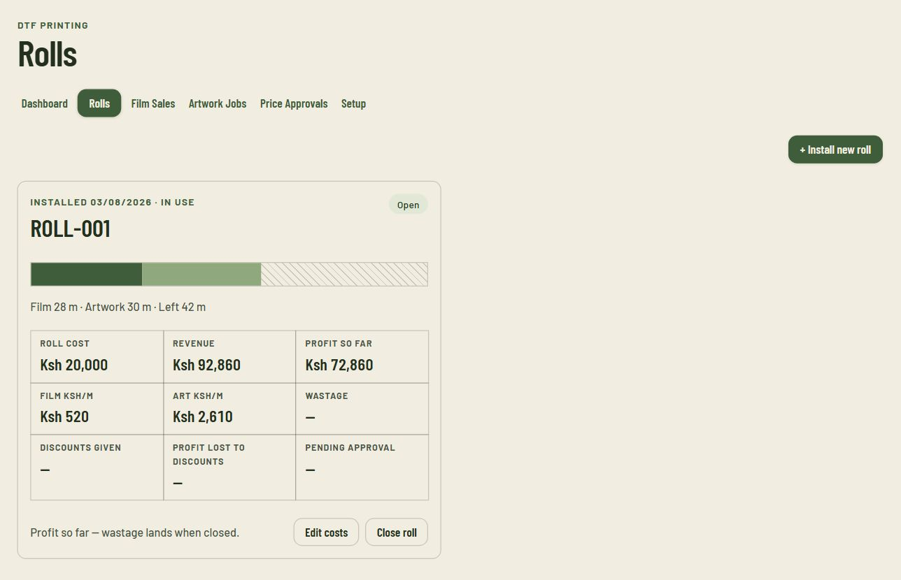
DTF → Rolls: install a roll with its real film, ink and powder cost; close it to work out wastage.
Starting the system with a roll that is already in use
When you go live there is usually a roll on the machine that is part-used. Do not install it as a full roll — the system would think the metres already used were still there. Use DTF → Rolls → Install new roll and tick This roll is already partly used:
Measure the film left on the roll and enter it as Metres left on the roll now. It must be less than a full roll (the length set in DTF → Setup).
Enter the film and ink / powder cost of the whole roll (what you paid for it). Do not work out the part-used share yourself: the screen shows what the roll will carry before you install it.
Press Install roll. The system tracks only the metres left, and gives the roll only the share of the cost that matches them — a roll with 60 of 100 m left carries 60% of its cost. Sales and jobs recorded from now draw it down; profit, cost per metre and wastage are worked out on the part the system actually saw, so they are not distorted by the sales made before it started.
The roll's card says Installed part-used and how many metres were used before it was recorded. Edit costs on such a roll changes the cost of the metres left, and shows Metres left when it was installed so a wrong entry can be corrected (the costs are re-scaled to the new metres). It cannot be set lower than what has already been sold or used on the roll.
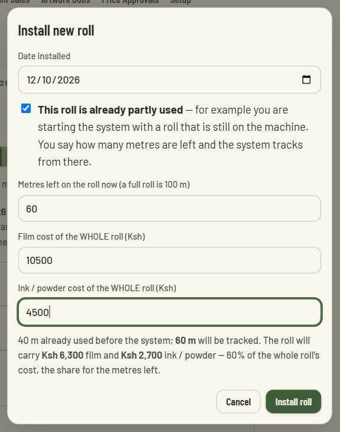
Install new roll, with This roll is already partly used ticked: the metres left, the cost of the whole roll, and what the system will carry.
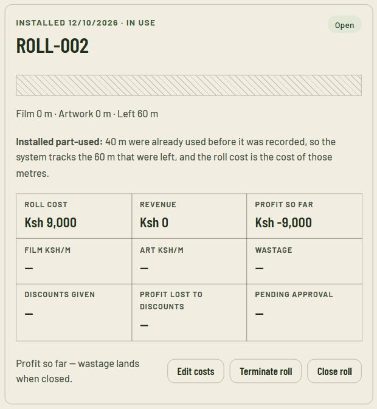
The roll afterwards: 60 m tracked, the note about the 40 m used before it was recorded, and the cost of the metres left.
UV DTF has its own rolls
The DTF page has a DTF | UV DTF switch at the top. Choosing UV DTF shows UV DTF's own rolls, film sales, artwork jobs, price approvals, dashboard and setup; nothing is mixed with DTF, and everything works the same way (including a part-used roll and Terminate roll).
Rolls are numbered UV-001 and up. A roll is two films — Film A (printing) and Film B (laminating) — so installing one asks for the cost of each (for example KES 6,500 and KES 4,500, KES 11,000 for the 50 m, or KES 220 a metre). The costs are entered for each roll, so a price change only affects the next roll; Edit costs corrects a roll.
Setup holds UV DTF's own figures: roll 50 m × 30 cm, standard price KES 1,500 a metre, floor KES 1,200, wastage tolerance 5%, and for artwork a charge of KES 4,280 a running metre, shared between the artworks on it, a base price of KES 40 (an artwork's share below 40 is recommended at 40) and a lowest price per artwork of KES 30.
Sales and jobs are recorded against the price-list services UV DTF Sheet (per metre) and UV DTF Printing, which the system creates the first time they are needed, under the business head UV DTF Printing.
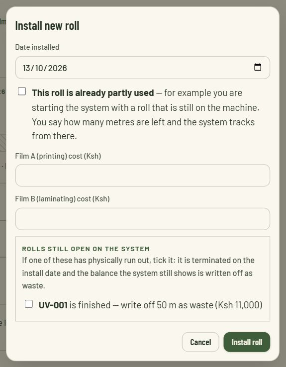
DTF → UV DTF → Rolls → Install new roll: the cost of each of the two films.
When a roll has run out but the system still shows a balance
Rolls are drawn down by the sales and jobs recorded against them, so a roll that was used without every sale being recorded — or that is simply finished — can still show metres on the system. Terminate roll (on an open roll in DTF → Rolls) deals with it:
Press Terminate roll. The screen shows the balance the system still holds and what writing it off means in metres, percentage and shillings.
Choose the cut-off date (not before the roll was installed, not in the future, and not before its last sale or job) and give the reason.
Press Terminate & write off. The roll is closed at the cut-off date, the balance is treated as waste, and the roll takes no more sales. The card says Terminated, who did it and why, and the Dashboard's wastage includes the amount.
When installing the next roll, Install new roll lists any rolls still open: tick the ones that are finished and they are terminated at the new roll's install date as the new roll goes in — all in one step. A roll with artwork jobs still waiting for a price approval cannot be terminated until those are decided. Reopen undoes a termination.
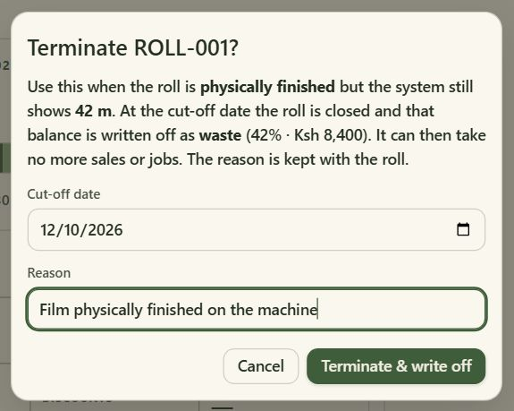
Terminate roll: the balance still on the system, what it will cost as waste, the cut-off date and the reason.
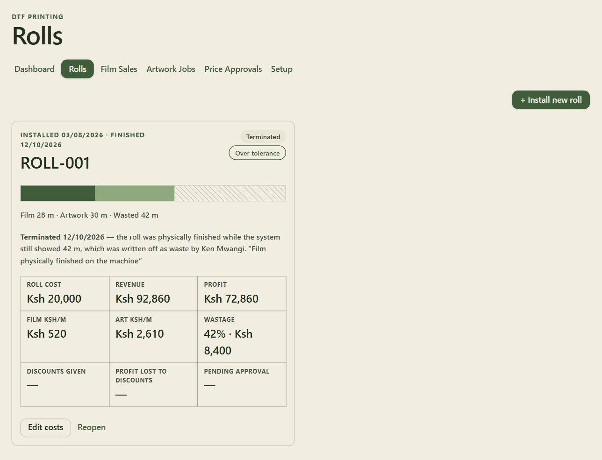
The roll afterwards: tagged Terminated, with the note, who did it, and the wastage.
11Finance: expenses, petty cash, assets
Expenses
Finance → Expenses is the one ledger for money going out.
Pick the date, category (an expense head), business head (optional, or Shared), amount, how it was paid, and the supplier and invoice number if you have them.
Paid now or on credit. A bill on credit needs a supplier and due date, and appears in Owed/Due columns until it is paid. Use Pay on the row to record a full or part payment.
VAT. Each expense head is set once as VAT-claimable or not; every expense under it follows. Claimable VAT becomes input VAT automatically.
Withholding tax. Expenses that deduct withholding tax (for example freelance commission) record it, and it appears in Payments due.
The list shows an Order column for supplier bills raised from an order, so every outsourced cost links back to its job.
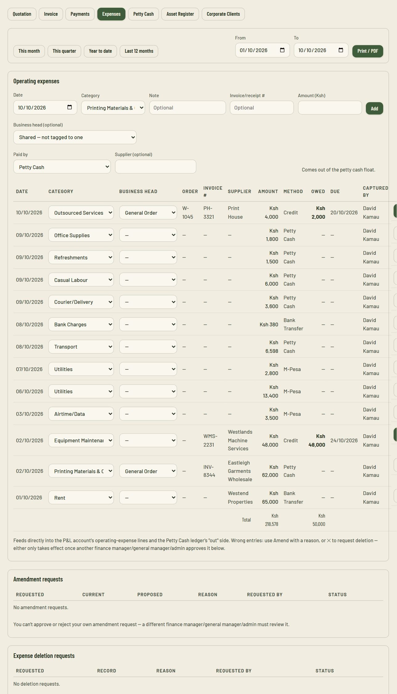
Finance → Expenses: capture form at the top, then the list with category, business head, Order, supplier, amount, method, Owed and Due, and the Pay, Amend and delete buttons.
Corrections need a second person
Amend: propose the new values with a reason. A different finance manager approves before anything changes.
Delete (✕): raises a request with a reason. The record stays fully counted until a different manager approves it.
You can move an expense to the right category, or re-tag its business head, without an amendment because no amount changes. Moving it off an outsourced job detaches it from that job.
Cheques and the cheque register
Money for salaries, purchases and the petty cash float normally comes out of the bank on one cheque drawn to the finance head and cashed; only rarely is a cheque written straight to a supplier or an employee. The system keeps every cheque number, so expenses and purchases can be matched to the bank statement.
A cash withdrawal. Under Finance → Petty Cash → Feed petty cash choose the source Bank Withdrawal, then type the cheque number and who it was drawn to. Everything then paid from petty cash — salaries, stock purchases and other expenses — is paid out of that money.
A cheque to a supplier. When you record the expense (or the payment of a bill bought on credit), choose Cheque as the way it was paid and type the cheque number (it cannot be left blank).
No number twice. A cheque number can be recorded only once; the system tells you which record already has it.
Cheques tab (Finance → Cheques). The cheque register lists every cheque with its date, payee or purpose, amount and whether it has cleared the bank. When you see a cheque on the bank statement press Mark cleared and the date; the ones not cleared are the unpresented cheques for the bank reconciliation. Search by number, payee or note. A spoilt or cancelled cheque number is kept with Keep it in the register, so the cheque book has no unexplained gaps.
Where the withdrawals went. At the top of the Cheques tab, each cash withdrawal shows how much of it went to salaries, purchases, other expenses and anything else, and what is left; press a row to see every payment. The float is pooled, so the oldest money is taken to be spent first. A cheque cashed for several purposes therefore shows its split without anyone tagging each payment. A withdrawal recorded before cheque numbers were kept is marked no number: open it and put the number on it.
Petty Cash
The petty cash desk. A role with the Petty cash desk permission (the Front Office role has it; an Admin sets it for any role under Master Data → Roles & Access) has a Petty Cash entry of its own in the menu, without the rest of Finance. It shows what is in the float, what was fed in and paid out, and the petty cash ledger, and it lets them log an expense paid from the float: the date, what it was for, the amount, details and an optional receipt number. It is refused if the float cannot cover it. Feeding the float, bills on credit, other ways of paying and removing entries stay with Finance.
Finance → Petty Cash: the float. Top-ups (bank withdrawal or cash-sales allocation) add to it; petty-cash expenses and wages take from it. The balance is the top-ups less what has been spent. A payment from petty cash is refused if the float cannot cover it on that date and every later day.
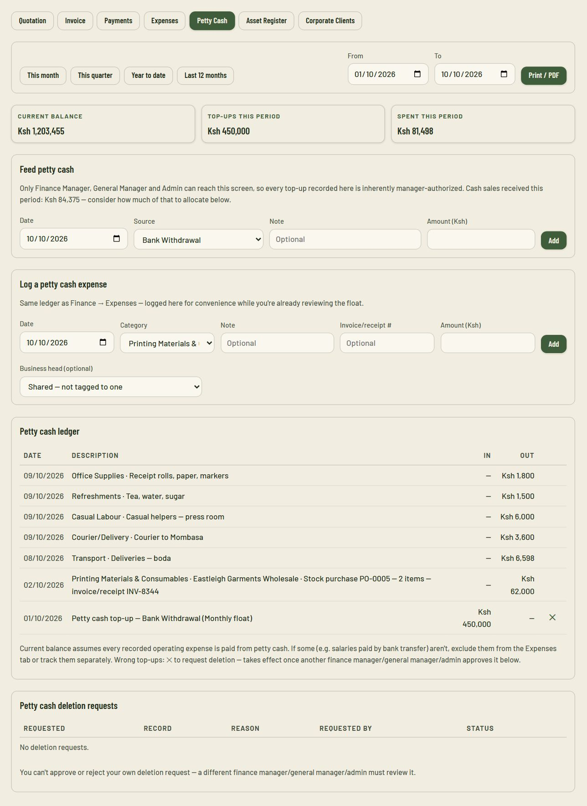
Finance → Petty Cash: top-ups, the running balance and the petty-cash expense form.
Asset Register
Finance → Asset Register: machines, computers, vehicles and furniture — with category, purchase date and cost, condition (Active, Under Repair, Retired) and status. Depreciation runs by itself each month and appears in the books (Accounting → Depreciation).
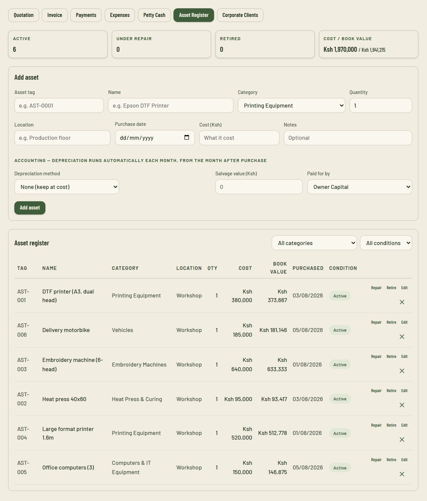
Finance → Asset Register: tag, name, category, cost and depreciation set-up for each asset.
Corporate Clients
Finance → Corporate Clients: the register that quotations and invoices use. Set credit days, an optional contact person (printed as Attn:), email and phone.
12Compliance: VAT, payroll, taxes
Compliance turns the day's records into what Kenya Revenue Authority, NSSF and SHIF expect. Every figure comes from the books, so it always agrees with them.
VAT
Output VAT is the VAT on sales (walk-in sales and invoices, less credit notes, plus debit notes). Input VAT is the VAT you claimed on purchases and expenses. Net VAT payable = output − input. A VAT statement lists every income and expense account with its VAT, and you can click an account to open the documents behind it.
Withholding VAT certificatesWhen a customer that is an appointed withholding agent keeps a percentage of the VAT-exclusive value for KRA (2% at the time of writing), they give you a certificate. It is a credit against the VAT you file; it does not change the sale, the profit or anyone's commission. Keep the certificates with the VAT file.
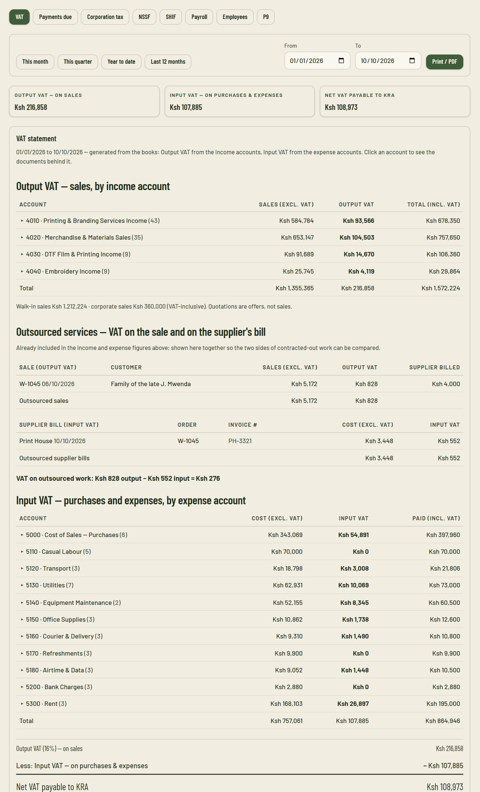
Compliance → VAT: output VAT, input VAT and net VAT payable for the dates chosen, with the statement by account below.
Payroll Finance
Compliance → Payroll. Employees are paid a fixed monthly gross; casuals are paid days worked × day rate and carry no statutory deductions.
The system works out NSSF, SHIF, the Affordable Housing Levy and PAYE (with personal relief) from the gross, for both employee and employer shares.
Wages are paid from petty cash, so the float must cover the net pay.
Print the payroll register and individual payslips. NSSF and SHIF tabs give the schedules for remittance.
Employees holds each person's National ID, KRA PIN, SHIF number and gross salary; P9 prints a year's tax deduction card for each employee.
Wrong or duplicate payroll entries are deleted only through the two-person approval.
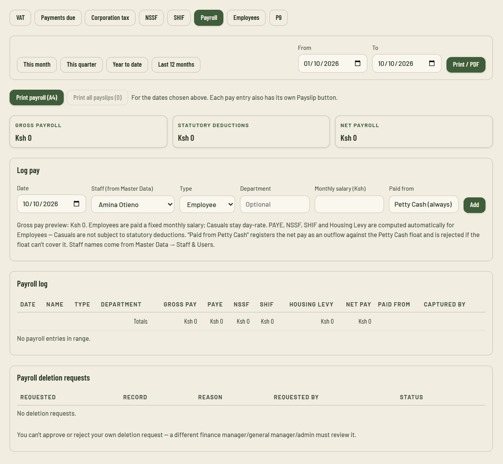
Compliance → Payroll: each employee's gross, NSSF, SHIF, housing levy, PAYE and net pay, with printing of the register and payslips.
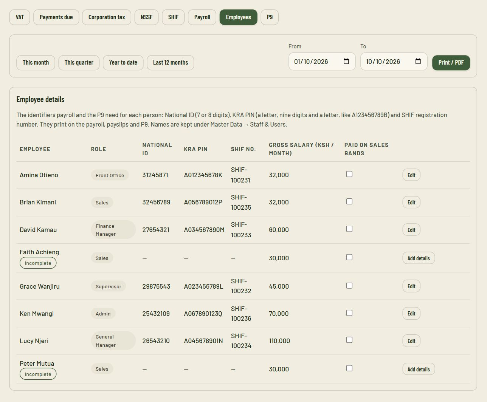
Compliance → Employees: National ID, KRA PIN, SHIF number and gross salary for each person, and the Paid on sales bands tick.
Payments due — the monthly cheque
Compliance → Payments due lists, month by month, everything the business must pay: PAYE, NSSF (employee and employer), SHIF, housing levy (employee and employer), VAT, withholding tax and income tax — with the total at the end. That total is the amount to write one cheque for. Each month shows when to pay: PAYE, SHIF and the levy by the 9th, NSSF by the 15th, VAT and withholding tax by the 20th.
A month with more VAT on purchases than on sales shows its credit for information. A credit never reduces any other month's VAT, so the cheque always carries each month's full VAT. A second block shows what the books say is still owing on each statutory account, so you can check the cheque.
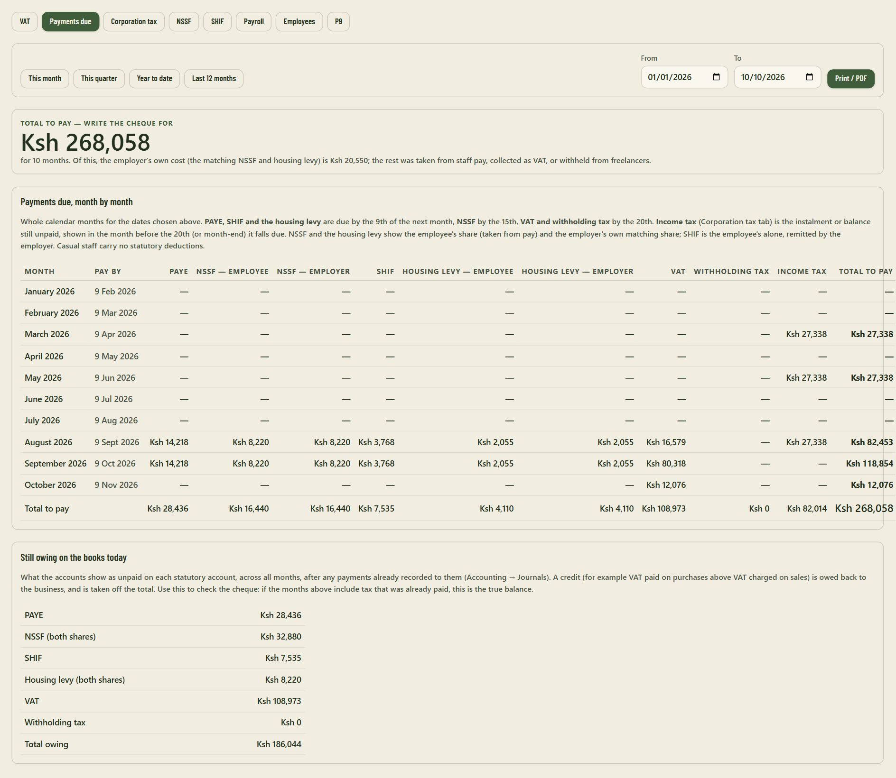
Compliance → Payments due: every statutory payment month by month, with the total to write the cheque for at the top and the true balance still owing on the books underneath. (Zoom in on screen to read the columns.)
Corporation tax
Compliance → Corporation tax works out income tax from the books under the Kenyan Income Tax Act:
Company: 30% of taxable profit. Taxable profit is the book profit, plus what the Act does not allow (depreciation, entertainment, fines and penalties, donations, plus anything you add), less capital allowances and tax losses brought forward. Withholding-tax credits come off the tax.
Instalments: four equal payments on the 20th of months 4, 6, 9 and 12 of the financial year, and the balance by the last day of the 4th month after year end.
Small business: switch to Turnover Tax — 3% of each month's sales, due the 20th of the next month (for sales of KES 1 million to 25 million).
An Admin enters adjustments and records each payment to KRA with its reference. The tax is kept apart from the books, which show profit before income tax.
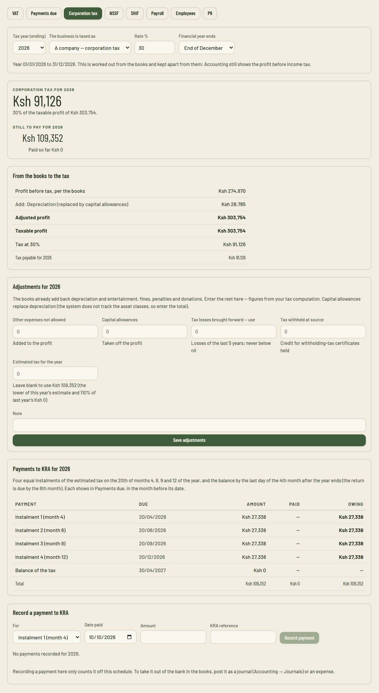
Compliance → Corporation tax: from the profit in the books to the tax, then the adjustments you enter.The instalment schedule and where payments to KRA are recorded.
Confirm with your accountantTax rates, allowance treatment and the minimum wage are set as placeholders you can change. The system calculates and schedules; your accountant files.
Putting income tax aside through the year
Open Compliance → Corporation tax: it starts with the Tax set-aside planner (and Accounting → Profit & Loss shows a one-line version). It is for planning and information only: nothing is posted to the books and no money moves. Month by month it shows the profit, what to hold by the end of the month, the plan for the month, what you actually set aside and whether you are short or ahead. At the top is the amount to put aside now to be on track, the projected tax for the year and about how much more to put aside each month, and a warning when an instalment due to KRA within 60 days (or already past due) is more than the money you hold.
How much to hold. The tax on the year's profit so far (the corporation tax rate in Compliance, 30% to start with), on the profit in the books plus the add-backs the tax working makes (depreciation, entertainment, fines, donations and the adjustments recorded for the year). Because it is the year to date, a loss month lowers it instead of going negative, and the figure corrects itself as the year goes on. A business on turnover tax holds that rate of its sales instead.
Recording what you set aside. When you move money into the tax savings (a separate bank or M-Pesa account is best), record the date and amount under the table (Use … fills in the amount to move now). Anyone with Finance access can record or remove an entry. Payments made to KRA are still recorded further down the page, and are taken out of what you hold.
The real tax is still worked out from the whole year below the planner; the planner is how you save towards it.
13Accounting: the books and statements
Behind every sale, payment, expense, payroll run and note, the system posts balanced double-entry records. There is no re-keying, and the statements are always built from the same ledger.
Accounting tab
What it gives you
Profit & Loss
Income, cost of sales and expenses for any date range, with month-by-month columns. Click a line to see the entries behind it. Cost of sales is real (purchases and supplier bills), not an estimate.
Balance Sheet
Assets, liabilities and equity at a date.
Cash Flow
Cash in and out for a period, by activity.
Receivables
Who owes you, aged by how long the invoice has been outstanding.
Payables
What you owe suppliers, aged, with due dates.
Credit / Debit Notes
Issue and list customer and supplier notes (section 8).
M-Pesa Matching
Pair M-Pesa statement lines to orders (section 6).
Depreciation
The monthly depreciation of registered assets, run automatically.
Chart of Accounts
The accounts. They build themselves; you can add accounts you need.
Journals
Manual entries: opening balances, owner's capital, remittances of statutory payments, adjustments. Every journal must balance.
General Ledger
Every posting for any account, in order.
Trial Balance
All account balances; debits equal credits.
Books Check
A health check: confirms the books balance and finds anything out of line. Run it before every month-end.
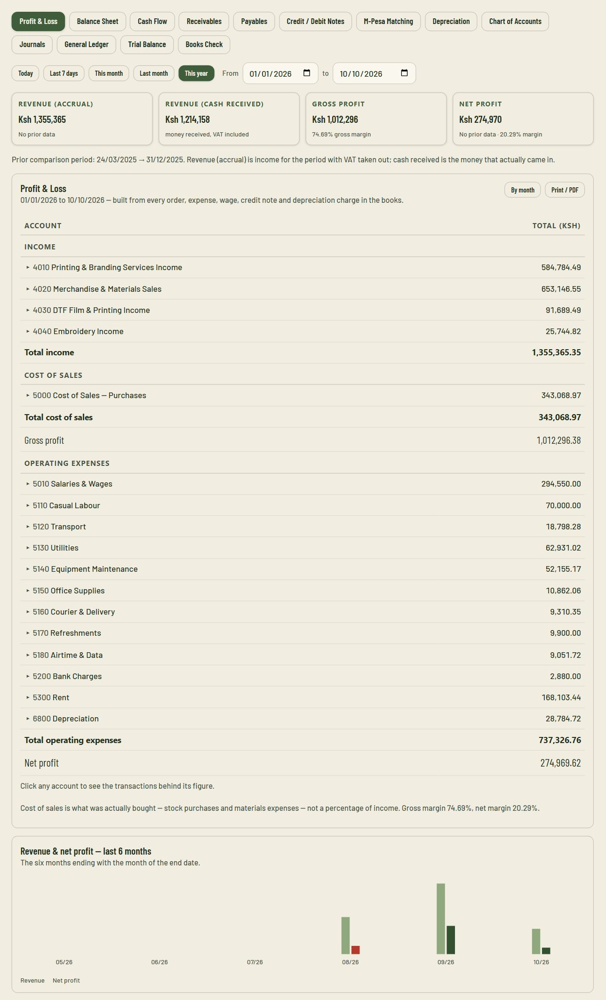
Accounting → Profit & Loss: income, cost of sales and expenses, with a click-through on every account to the entries behind it.
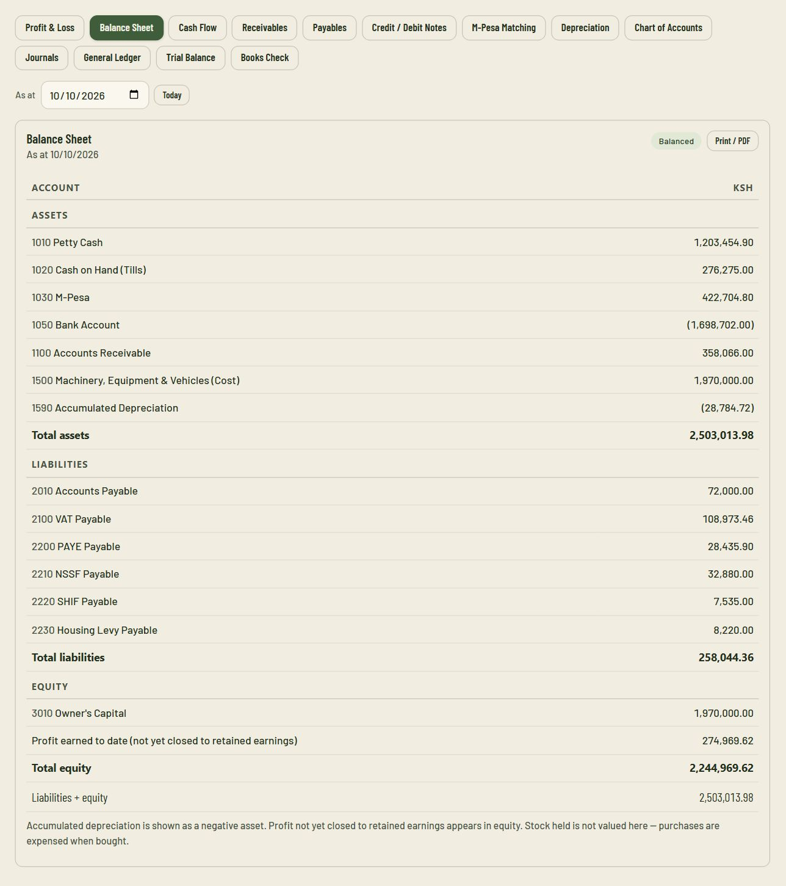
Accounting → Balance Sheet.
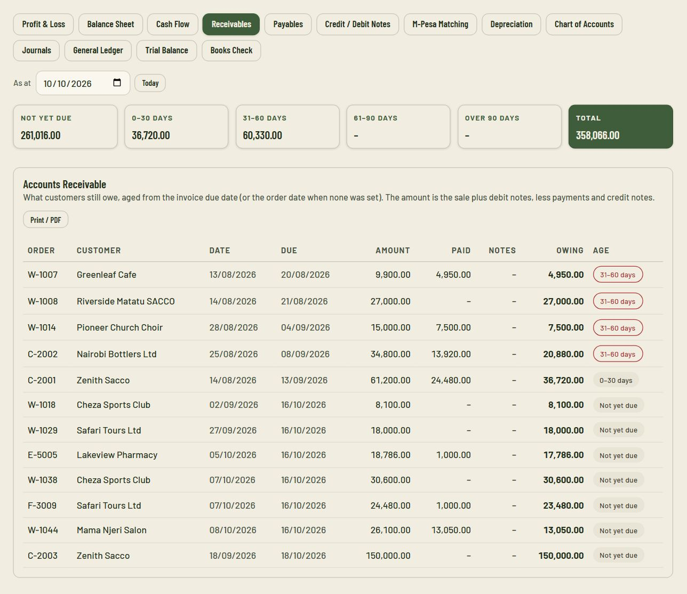
Accounting → Receivables: who owes you, and how overdue it is.
Who collects. Between Owing and Age the column Responsible for collection names the person who has to collect the balance from the customer. It is the sales person the sale is credited to, even when someone else keyed the order (the front office capturing for a sales person, for example), so a sale on credit stays with the person who sold it. Above the table, Who is responsible for collecting shows what each person has to collect; press a name to see only theirs. Accounting can hand a balance to someone else with Change (the row then says handed over · sold by …) and take it back with Reset; a person who has left the business cannot be chosen.
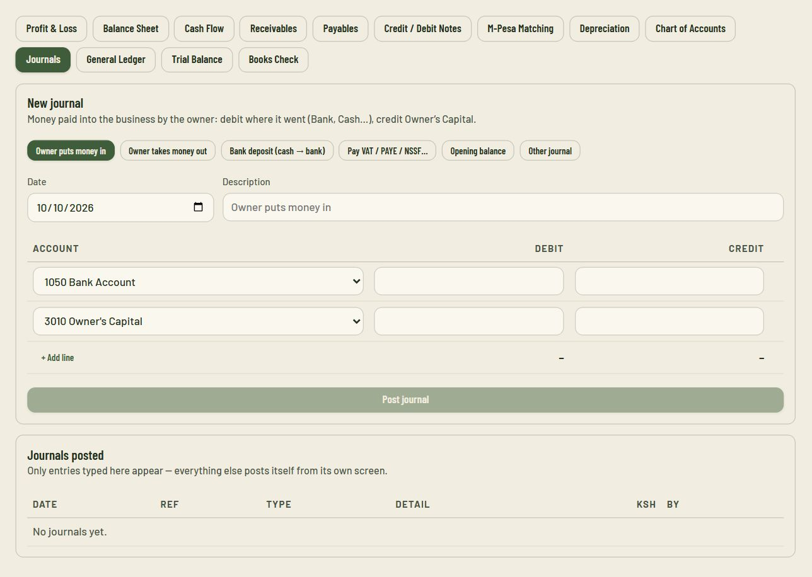
Accounting → Journals: opening balances and manual entries; every journal must balance.
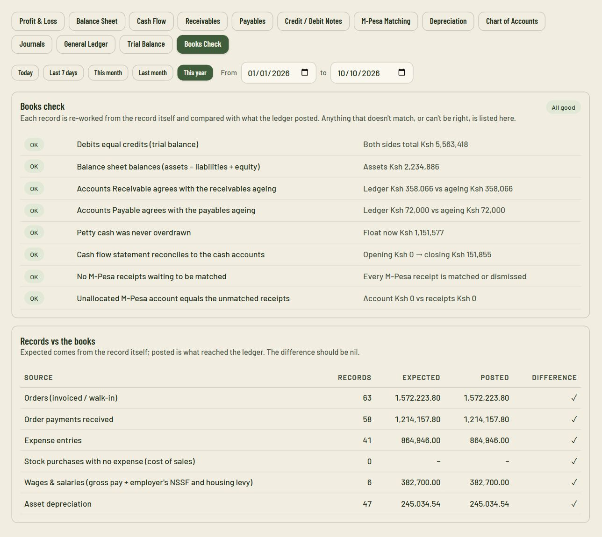
Accounting → Books Check: confirms the books balance and flags anything out of line.
Remitting taxesWhen you pay PAYE, NSSF, SHIF, the levy or VAT to the authority, record it as a journal against the statutory account (Accounting → Journals). The "still owing" figure under Compliance → Payments due then reduces.
14Sales commission and staff pay
The Commission module appears when an Admin switches it on (Master Data → Company Info). Everyone who captures orders sees My commission: what they earned this month, how it was made up, what they have sold and the clients credited to them. Managers also see Team & payouts, Monthly report, Clients, Freelancers and Rates.
What counts
Commission is earned on money received in the month, net of VAT, on orders credited to the person (clients they sourced, plus the film and artwork they captured).
Pay bands — a fixed payout by the month's sales
The default scheme pays a fixed amount for the band the month's sales reached. It is a step, not a slice: you keep your band's payout until you reach the next band, then it moves up.
Band
Monthly sales (net)
Payout (KES)
0
Below 30,000
0
1
30,000 – 59,999
12,000
2
60,000 – 89,999
18,000
3
90,000 – 119,999
24,000
4
120,000 – 179,999 (the anchor)
35,000
5
180,000 – 239,999
38,000
6
240,000 – 299,999
42,000
7
300,000 – 359,999
48,000
8
360,000 – 399,999
54,000
9
400,000 – 499,999
58,000
10
500,000 and above
60,000
These are the starting figures. Only an Admin can change the commission rates (Commission → Rates): managers see them read-only, and staff see the scheme they are paid under. Film and artwork extras are paid on top. Sales below KES 120,000 a month require performance improvement: the person sees a warning on their own screen, and managers see the month marked needs improvement. An alternative scheme (a percentage of the sales above a target of 3 × salary) can be chosen instead in Rates.
Commission → Team & payouts: each person's current sales against the performance floor, sourced sales, film, artwork and total, with approval and payout status.Commission → Rates: the pay bands, the performance floor and the minimum monthly wage.
The Client Register: each sales person's clients
Open Commission → Client Register (a tab beside Team & payouts; everyone who captures orders sees it, and so does the front office, who capture for others). It is the list of clients each sales person has brought in — name and phone — and it is the same register commission uses for clients credited to a staff member.
Add a client. A sales person adds their own clients: type the client's name and phone, or pick a corporate account, then Add to the register. The front office and commission managers choose Whose clients first and keep anyone's register. A client is recognised by their phone number (the last nine digits, so 0712 345 678 and +254 712 345 678 are the same), and belongs to one sales person at a time: adding a client who is already credited to someone else is refused until they are released (a commission manager does that with Release).
Pick them on an order. On General Order, Embroidery Order, the box that opens for every DTF, UV DTF, UV pen and UV flatbed order, and when saving a Job Costing quote, a box Pick one of your clients appears at the top. The front office picks the sales person first (it is the same choice as Who brought this order?) and the box lists their clients; choosing one fills in the client's name and phone. A client in the register is also recognised automatically when their phone is typed, and the order is credited to their sales person.
Edit.Edit corrects a name or phone; a new phone number cannot be one that belongs to another sales person's client.
It works with commission: while an Admin has the commission scheme switched off (Master Data → Company Info) the register and the pick boxes are hidden.
Where the sales come from: a heading for each kind of sale
On My commission (and, for a manager, when a person is opened on Team & payouts) the block Where your sales come from splits the month by the kind of sale under Sales in the side navigation — General Order, DTF Film Order, DTF Artwork Order, UV DTF Film Order, UV DTF Artwork Order, Embroidery Order, UV Pens, UV Flatbed Printing and Job Costing (cards, signage, brochures, eulogies). A sale belongs to the screen it was captured through. For each kind the table shows:
Orders raised and Sold — their worth with the VAT out, by the day the order was raised, paid or not;
Share — how much of the month's selling this kind is;
Last month — the same figure last month, with ▲ or ▼ and the change;
Team average — what each person on the team sold of this kind on average;
Commission — what this kind earned: the film and artwork premiums sit on their own kinds (DTF and UV DTF apart), and the commission the pay bands pay on sourced clients is shared between the other kinds in proportion to the money received on each;
and a note: Selling most here for the biggest, Behind the team average for a kind where the person has sold less than the average, Not selling yet where they have sold none but others have. A kind nobody has sold, this month or last, is left out.
It changes nothing that is paid: it is only a view of the same month. Use it to see where you sell most and where you are behind.
The pay guide builds itself from your settings
Commission has a tab called How you are paid, open to every employee who sees Commission. It explains the pay model in plain language — what counts as sales, the pay bands and the ladder, the minimum wage, the monthly target, the film and artwork extras, take-home examples at every pay level, and the payday — and every figure in it is read from Commission → Rates. When an Admin changes a band, the target, the minimum wage, the film or artwork rates or the payday (a day from 1 to 28, set under Rates), the guide and each person's My commission screen show the change at once. Print / PDF on that tab gives an up-to-date copy to hand out.
Paying it
For people on the percentage scheme, a manager approves the month in Team & payouts (once it is over) and then marks it paid; the payment is posted as a Sales Commission expense.
Paid on sales bands: in Compliance → Employees tick this for employees whose pay is the band payout. Approving a closed month then puts their pay into payroll automatically (staff are paid on the 5th of the following month), never below the minimum wage (set in Commission → Rates). They carry PAYE, NSSF, SHIF and the levy like any employee, and no second salary is entered for them.
The Monthly report shows each person's sales, target and commission month by month for a year, with what has been paid and what is still to pay. Pick the year, then use the month calendar under the year's totals: press a month (each shows its commission) to see just that month, or All months for the whole year, newest first. It opens on the latest month, and months with no figures yet are greyed out. Print / PDF prints what is on screen.
Freelance sales persons
The same explanation, written from the current rates, is on screen in Commission → Freelancers → How it works, with worked examples that change when a rate is changed.
Setting and changing the rates.Commission → Freelancers → Rates & set-up holds everything that decides what a freelance sales person is paid: the weekly bands (what the base part of their week pays, slice by slice), the premium (the share of what is charged above base that they keep), the weight of contracted-out and stock lines towards the bands, how many months a client stays theirs while orders keep coming, and the withholding tax deducted from their pay. Only an Admin can change them; managers who see Commission can read them but the boxes are locked. Change any figure, check it against the Try the scale on one big sale example at the bottom, and press Save the freelance rates — Discard changes puts back what was saved, and Use the suggested starting rates fills in a sensible set (nothing changes until you save). A change applies from the moment it is saved, and it can be made as often as you like. A week is worked out with the rates in force when it is approved, so a week that is already approved keeps its amount until it is approved again, and a paid week never changes. These are the same figures as the freelance part of Commission → Rates, so changing them in either place changes both, and How it works is always written from what is saved.
How an order becomes a freelancer's. Whoever captures an order marks it as brought by a freelance sales person and picks them; a new person added at capture waits for a manager's approval before anything is paid to them. An order marked for a freelancer is credited to them alone: no staff member earns commission on it and it counts towards no staff target. A named client with a phone number (or a corporate account) becomes the freelancer's client the first time they bring them, and stays theirs while an order comes at least every 12 months (each order restarts the count; a manager can release a client early), whoever captures it. A client who belongs to a staff member cannot be given to a freelancer, nor the other way round.
What counts. The base price is the price we must have for our minimum margin: the list price of a service or material, the minimum price of DTF film, or the recommended price of an artwork job (the heat press fee included). It is checked when the order is taken, after the line's own discount and its share of any order discount. A line sold at or above base counts, split into the base part and the premium above it; a line sold below base is left out whole and earns nothing.
Paying it. After the week closes (Sunday) a manager presses Approve week; only Active freelancers are approved (a new or suspended one is listed as skipped, with the reason). Each approved person is paid by cash, cheque, bank or M-Pesa recorded by hand, or sent straight to their M-Pesa phone; paying books a Freelance Commission expense. An approved week can be taken back before it is paid; a paid one cannot.
Paid weekly (Monday to Sunday) on money received, net of output VAT, on the orders credited to them. Input VAT never comes into it, because they are paid on sales, not on profit. The rest of this section sets out how.
Base price part — the part of a sale that is the list price is paid in marginal bands on the week's total: 2% of the first 50,000, 3% to 150,000, 4% to 500,000, then 3% to 2 million, 2% to 5 million and 1% above. The rate falls again for the largest deals because they are bargained to a thin margin. A single sale of KES 10 million (8.62 million net) pays about KES 159,207, 1.85% of its net, rather than the roughly KES 345,000 a flat 4% would.
Premium — 30% of whatever was charged above the list price. A line sold below its list price earns nothing. The base part of contracted-out and stock lines counts at 50%.
Withholding tax (5% by default; a person can have their own rate, or 0 if exempt) is deducted from what they are paid, and appears under Commission → Freelancers → Tax withheld for the KRA return.
All the rates are editable (Admin) under Commission → Rates, where Try the scale on one big sale works out what any sale pays: the commission, the tax withheld from the freelancer, and what is left for the company after the commission and the 30% income tax on the profit that remains. The commission is a business expense, so the 30% is applied to the profit after it; Compliance → Corporation tax does the same from the books.
Commission → Rates → Try the scale on one big sale: a KES 10 million sale pays KES 159,207 (1.85% of its net); after the 5% tax withheld the freelancer receives KES 151,247, and the company keeps KES 2,000,624 after the commission and 30% income tax, at an assumed 35% gross margin. The margin is your own figure.
Staying compliant at year-end. Every payout is booked as a Freelance Commission expense, so it lowers the profit the income tax is worked out on. Keep each person's KRA PIN and national ID on file (the screens list anyone missing them), pay the tax withheld over to KRA each month, and use Commission → Freelancers → Tax withheld for the Freelancers' year: what each was paid in the calendar year, the tax withheld and what they received, ready to print for them and for your accountant.
Paid weekly (Monday to Sunday) on the sales they bring at or above base prices, in marginal bands, plus a share of what was charged above base. Withholding tax is deducted from their pay (a standard rate, or their own rate, or exempt) and appears in Payments due. They are paid by any method (M-Pesa, cash, cheque, bank, card).
People (HR): leave, off days and performance
People (HR) (under Operations in the menu) is where leave is asked for and decided, where you see who is off, and where reviews are kept. Everyone with HR access asks for their own leave and sees the calendar; the General Manager and Admin (anyone given People (HR): decide leave, see everyone, reviews and policy under Master Data → Roles & Access) also see the Overview, everyone's leave, Performance and Policy. A person without a manager role sees My leave and the Off-day calendar only.
+ New leave request. Choose the type (Annual, Sick, Off-in-lieu, Unpaid, Maternity, Paternity), the first and last day, and a note. The box shows the working days it uses (the weekly days off, public holidays and company off days are not counted) and your balance after. It is refused if the dates overlap another request, the last day is before the first, you ask for more than you have, or a sick leave past the certificate limit has no medical certificate ticked.
Leave requests. Your balances at the top (days left of what you have earned, taken, waiting, carried over), then every request with its status. A manager presses Approve or Reject (a reason is needed, and the person sees it); nobody decides their own leave. If approving would leave fewer people at work than the minimum, the manager is asked to confirm. You can cancel a request still waiting; a manager can also cancel an approved one, and the days go back to the balance.
Off-day calendar. One month at a time (arrows, or pick a month). Approved leave is a filled name, a request still waiting a dashed one; weekly days off and public or company off days are shaded, and a day below the minimum at work is red. Others' kind of leave is private: only managers (and the person) see whether it is sick or annual.
Overview (managers). Staff at work today, requests waiting, leave taken this month, the leave liability (unused annual days at each person's daily pay, basic salary ÷ 30; people with no salary on record are noted), who needs a decision, and cover for each working day this week.
Performance (managers). For a quarter: each person's sales against their target, orders captured and commission earned (from the books, as in Commission), leave taken; and your review of them: goals met of goals set, a score out of 100, a note, and one-to-one notes. Save a draft, or complete the review.
Policy (managers). The kinds of leave and what each allows (days a year, whether it is paid, earned a month at a time or from January, how many days carry over, when a certificate is needed); the weekly days off and the fewest people at work; the public holidays and company off days (the fixed Kenyan holidays are added for you; add the ones that move, such as Good Friday, Easter Monday and Idd-ul-Fitr); and each person's start date, from which annual leave is earned (no start date counts as a full year).
The figures that come with the system are the Employment Act's minimums (annual leave 21 days a year earned monthly with up to 5 carried over, sick leave 7 days, and so on): change them to your own policy. Leave is a record and a decision here: it does not post to the books or change payroll yet, so unpaid leave is still taken off pay in Compliance → Payroll by hand.
15Reports
Open Reports and choose a date range (Today, This month, This year, or any From/To).
Report
Answers
Sales
Every sale in the period with totals. Matches the books and the VAT return exactly.
Sales by Business Head
For each line of business — DTF, UV, laser, large format, embroidery, general — the orders, sales (net of VAT, after discounts), costs and margin, with the services inside each. Costs that belong to no line show separately as Shared (rent, wages, utilities). How the Sales screens land in it: a service counts under its own business head; a material sold with a service (a shirt on an embroidery order) counts under the head of that service, and a material sold on its own is General Order; DTF Printing and UV DTF Printing show their film sales and artwork sales apart (the costs belong to the head as a whole); UV pens count under UV DTF Printing; costed business cards, eulogies, company profiles and brochures (Job Costing) count under Printing & Publications, and costed signage under Large Format Printing. The Collected column is the money actually received in the period on each head's sales (VAT out, less refunds, by the day it was paid) — the same measure Commission is paid on — to set beside what was sold.
Sales by Category
Revenue by individual service, with plain product sales in their own bucket, to rank which services and machines earn the most.
Embroidery Profitability
Embroidery revenue against thread, needles and other costs, with the effect of the quantity price and the set-up lines.
Reports → Sales by Business Head: orders, sales, costs and margin for each line of business.
Elsewhere: DTF → Dashboard for roll profitability, Accounting → Profit & Loss for the full statement, Commission → Monthly report for sales and commission by person.
What each role may open or do. Admin is always everything.
Service Price List
Services, units, prices, descriptions, sizes, heads, pressing fee and area pricing; Excel download and upload. The list is shown in two parts: the ordinary services, then Artwork-priced services (priced by the size of one artwork). Ticking or unticking Artwork pricing on a line moves it between the lists.
Business Heads
The lines of business that sales and costs are reported under.
Stock Price List
Stocked items, sizes, prices, reorder levels, usual business head; Excel download and upload.
Discount Rules
The discount ceiling above which supervisor approval is required.
Company Info
Company and system names, logo, addresses, phones, web and social, tax details, the commission switch.
Master Data → Staff & Users: add a person, reset a PIN, edit, switch off or delete. Names are kept in three parts.Master Data → Roles & Access: tick what each role may open or do.Master Data → Service Price List: unit, price, size, business head and the special flags, with Excel download and upload.
17Security, backups and audit
Everyone signs in with their own PIN. Five wrong PINs lock the account — 15 minutes the first time, then 30, 60 and so on, up to a day.
Permissions are checked on the server at every request, not only by hiding menu items. A person sees every order only if their role says so; everyone else sees the orders they captured.
Two-person control for amending or deleting expenses, payroll entries and petty-cash top-ups; approving requisitions; approving artwork or embroidery price cuts; receiving purchases. Nobody approves their own work.
Audit log (Master Data → Security): every change made in the system, every refused request, sign-ins and sensitive downloads — who, when and from where. Passwords, PINs and codes are never recorded. Kept for two years. The same screen lists what is switched on to protect the system and what still needs doing.
Backups (Master Data → Backup): a complete copy of every record as one file. Set an automatic schedule (every 6 or 12 hours, daily, every 2 days or weekly; the newest N are kept), download copies, and optionally copy them to Google Drive. Restore asks you to type RESTORE and saves the current system first; a failed restore changes nothing.
Switching a person off ends their sessions immediately but keeps their history.
Master Data → Backup & Restore: back up now, download, set the schedule, restore, and connect Google Drive.
18Daily, weekly and month-end routines
When
Who
Do
Every day
Front Office / Staff
Capture orders, take payments, print receipts. Check Pending Payments before handing over.
Supervisor
Assign waiting jobs in Production. Inspect finished work in Quality Control. Approve discounts above the ceiling.
Manager
Decide DTF and embroidery Price Approvals. Receive purchased goods.
Finance
Record expenses and supplier bills. Confirm M-Pesa payments that were not matched.
Every week
Finance
Pay freelance commission. Upload the M-Pesa statement and match. Chase Receivables.
Check Sales by Business Head and the DTF dashboard.
Month-end
Everyone
Make sure every order is paid or on an invoice, and every expense is recorded.
Stock
Do a Stock Take.
Finance
Enter payroll. Run Books Check. Review the P&L and Balance Sheet.
Finance
Open Payments due, write the cheque, then record the remittances as journals.
Manager
Approve the month in Commission → Team & payouts (puts pay-band staff into payroll) before payday, the 5th.
Admin
Confirm a recent backup exists.
19Troubleshooting and questions
A correct PIN "does not work"
After five wrong tries the account is locked — 15 minutes the first time, then longer each time. Wait, or ask an Admin to reset your PIN (Master Data → Staff & Users → Reset PIN).
I cannot see a module
Your role does not include it. Ask an Admin to adjust your role in Master Data → Roles & Access. After a change, sign out and in so the menu refreshes.
I cannot see another person's orders
You see the orders you captured unless your role has View all orders (or Payments, Production assignment, DTF manager, Quality control, Finance or Accounting).
The price will not go lower
The system enforces minimum prices on film, artwork and embroidery at the server. To go lower, use the route that exists for it: the quantity price on embroidery, or a lower artwork price, and wait for the manager's approval.
An order will not hand over
It must have passed Quality Control (stage Ready for Pickup/Delivery). If money is owing, take the payment or choose Hand over on credit.
A payment from petty cash is refused
The float cannot cover it on that date or a later one. Top up under Finance → Petty Cash, or choose another payment method.
The M-Pesa prompt did not complete
Ask a manager with the Payments permission to confirm by hand with the 10-character code from the customer's SMS. Check the M-Pesa connection test in Master Data → M-Pesa.
The system is slow to load
Hard-refresh the page (Ctrl+Shift+R) after an update. If it persists, tell your administrator; slow requests are logged on the server.
Where is my data kept, and can I lose it?
On your own server. Automatic backups protect it; confirm yours is running under Master Data → Backup.